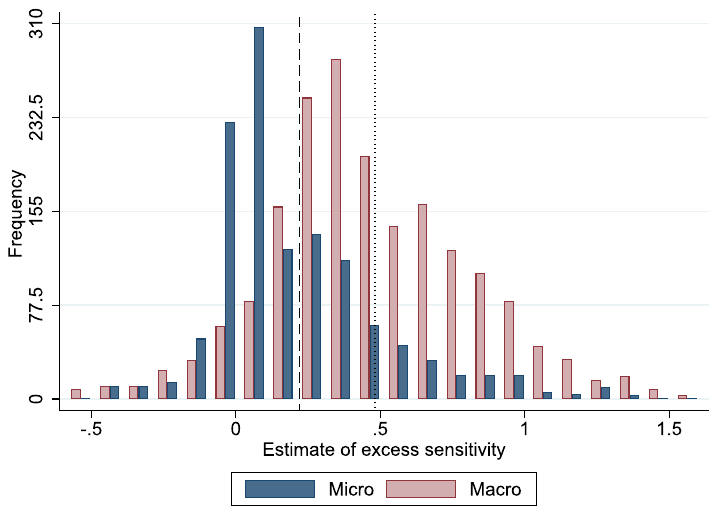
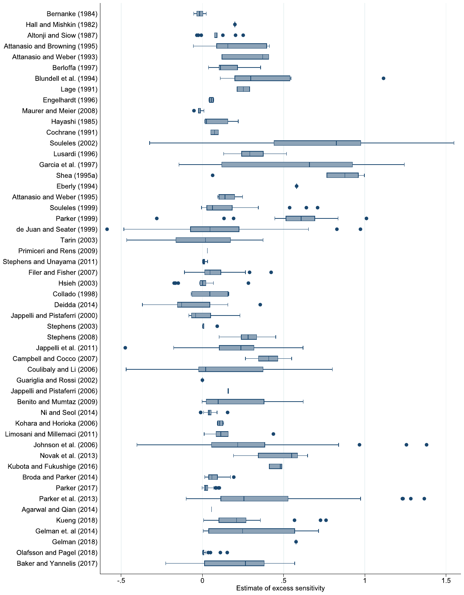
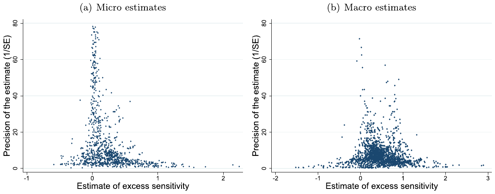
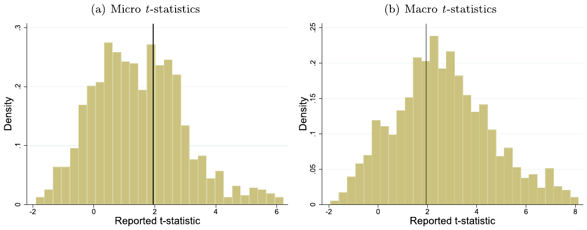
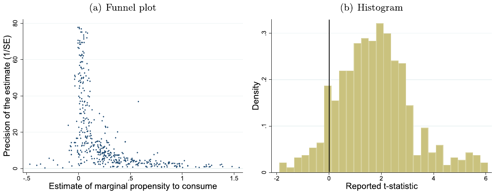
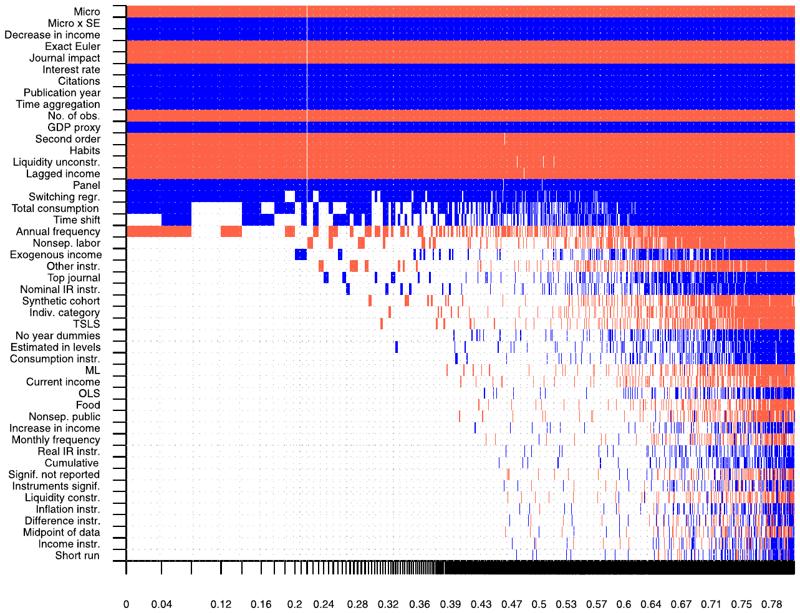
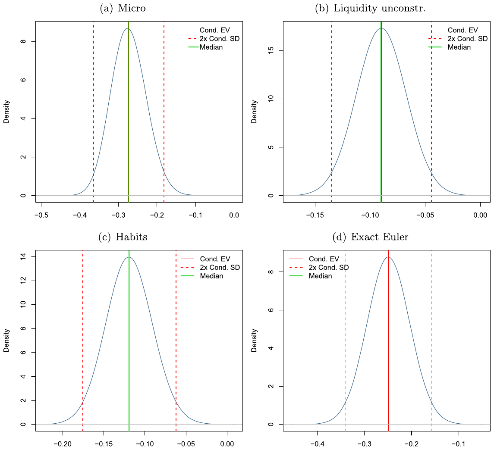
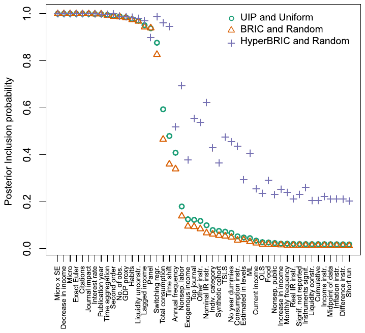

Do Consumers Really Follow a Rule of Thumb? Three Thousand Estimates from 144 Studies Say `Probably Not'
Tomas Havranek & Anna Sokolova (2020), "Do Consumers Really Follow a Rule of Thumb? Three Thousand Estimates from 144 Studies Say `Probably Not'." Review of Economic Dynamics 35(1), 97-122. https://doi.org/10.1016/j.red.2019.05.004.
Tomas Havraneka,*, Anna Sokolovab,c
aInstitute of Economic Studies, Faculty of Social Sciences, Charles University, Prague, Czechia; bDepartment of Economics, University of Nevada, Reno, United States of America; cNational Research University Higher School of Economics, International Laboratory for Macroeconomic Analysis, Moscow, Russian Federation
An online appendix with data, code, and supplementary results is available at meta-analysis.cz/excess_sensitivity. We are grateful to the editor, Greg Kaplan, and three anonymous referees for their useful comments. We also thank Orazio Attanasio, Jan Bruha, Alessandro Bucciol, Christopher Carroll, Yuriy Gorodnichenko, Udara Peiris, Sergey Pekarski, Luigi Pistaferri, Herakles Polemarchakis, Jiri Slacalek, Dimitrios Tsomocos, participants of the American Economic Association Annual Meeting (Philadelphia, 2018), European Economic Association Annual Meeting (Lisbon, 2017), Meta-Analysis of Economics Research Network Colloquium (Conway, 2016), and seminars at University of Nevada, Reno; Higher School of Economics, Moscow; Charles University, Prague; and the Czech National Bank for their helpful suggestions on earlier versions of the manuscript. We thank all the authors of studies on excess sensitivity who responded to our e-mails and shared their data with us. Havranek acknowledges support from the Czech Science Foundation (grant #19-26812X). Sokolova acknowledges support from the Basic Research Program at the National Research University Higher School of Economics (HSE) and from the Russian Academic Excellence Project '5-100'.
*Corresponding author. E-mail addresses: tomas.havranek@ies-prague.org (T. Havranek), asokolova@unr.edu (A. Sokolova).
Abstract
We show that three factors combine to explain the mean magnitude of excess sensitivity reported in studies estimating the consumption response to income changes: the use of macro data, publication bias, and liquidity constraints. When micro data are used, publication bias is corrected for, and households under examination have substantial liquidity, the literature implies little evidence of deviations from consumption smoothing. The result holds when we control for 45 additional variables reflecting the methods employed by researchers and use Bayesian model averaging to account for model uncertainty. The estimates produced by this literature are also systematically affected by the size of the change in income and the chosen measure of consumption.
Keywords: Excess sensitivity, Marginal propensity to consume, Rule-of-thumb consumers, Liquidity constraints, Publication bias
JEL classification C83; D12; E21
1. Introduction
A burgeoning literature investigates the effects of monetary and fiscal policy in a framework where a fraction of households neither save nor borrow, but follow the rule of thumb to consume their current income. Galí et al. (2004) show that the existence of such consumers affects the effectiveness of standard monetary policy rules, while Galí et al. (2007) document how rule-of-thumb behavior can help reconcile model predictions and empirical evidence concerning the effects of government spending on private consumption. Models with a sufficiently high share of rule-of-thumb consumers produce large fiscal multipliers, as illustrated by Leeper et al. (2017). The calibrated or prior value used for this share varies, but is usually substantial: for example, Drautzburg and Uhlig (2015) use 0.25, Leeper et al. (2017) use 0.3, Bilbiie (2008) and Kriwoluzky (2012) use 0.4, Erceg et al. (2006), Galí et al. (2007), Forni et al. (2009), Cogan et al. (2010), Colciago (2011), and Furlanetto and Seneca (2012) use 0.5, while Andres et al. (2008) use 0.65. Models used by policymaking institutions to analyze fiscal stimulus typically assume 0.2–0.5 (Coenen et al., 2012).
Consumers who behave according to a standard incomplete markets model should adjust their consumption in response to unanticipated permanent income shocks, but not anticipated or transitory ones—unless they have limited access to disposable liquid resources. We examine the empirical literature that studies the sensitivity of consumption to the two latter income changes, the literature often cited as the motivation for calibrating shares of rule-of-thumb consumers (we will refer to this evidence as "excess sensitivity estimates").1 We find that estimates produced by this literature are overall inconsistent with the calibrated values quoted in the previous paragraph. When corrected for the bias due to aggregation and the bias due to publication selection, the literature yields a mean excess sensitivity of merely 0.11. That is outside the 90% probability interval even for the conservative prior used by Leeper et al. (2017). The remaining excess sensitivity, moreover, can be attributed to binding liquidity constraints.
To obtain this result, we collect 3,127 estimates of excess sensitivity reported in 144 published studies and investigate why the estimates vary. In doing so, we take on the challenge put forward by the first survey of the micro literature estimating excess sensitivity, Browning and Lusardi (1996, p. 1833): "It is frustrating in the extreme that we have very little idea of what gives rise to the different findings. (. . . ) We still await a study which traces all of the sources of differences in conclusions to sample period; sample selection; functional form; variable definition; demographic controls; econometric technique; stochastic specification; instrument definition; etc." To this end we use the methodology of meta-analysis, which has been employed in economics, for example, by Chetty et al. (2013) on the Frisch elasticity of labor supply, Havranek et al. (2015) on the elasticity of intertemporal substitution in consumption, and Card et al. (2018) on the effects of active labor market policy.
We first examine estimates from all 144 studies together, providing a bird's eye view of the literature. We then focus on a more homogeneous subset of micro studies that estimate marginal propensities to consume (MPCs) out of observable payments. Our results indicate that three factors contribute approximately equally to the mean reported excess sensitivity, 0.37: methodology issues (especially the use of macro data), selective reporting of estimates (publication bias), and structural reasons for excess sensitivity (liquidity constraints). The mean coefficient corrected for the three factors mentioned above is zero, which implies little evidence for pure rule-of-thumb behavior—unless liquidity constraints and rule-of-thumb behavior are both symptoms of another characteristic of households, as suggested by Parker (2017). We also find that, for micro studies estimating MPCs, payment amount affects the reported results substantially (an increase in the logarithm of payment size by one standard deviation is associated with a decrease in the reported MPC of 0.08), as does the horizon over which the responses are estimated (an increase in the horizon by one month is associated with an increase in the reported MPC of 0.04). The employed measure of consumption matters for the estimated consumption response (for example, estimated MPCs tend to be 0.06 smaller for food than for the entire set of non-durable goods). In contrast, the choice of estimation techniques does not affect the results in a systematic way.
Our results suggest that publication bias impacts micro studies, but not macro studies: because the underlying excess sensitivity is much smaller for micro data, negative (and thus unintuitive) results tend to appear there much more often, which might lead to selective reporting. We also find indications for a preference in the literature to publish statistically significant results, which is consistent with Brodeur et al. (2016), who collect 50,000 p-values from various fields of economics and show that insignificant estimates are systematically underreported. In a similar vein, Ioannidis et al. (2017) survey evidence from 6,700 econometric studies and conclude that nearly 80% of the reported effects are exaggerated because of publication bias. In the context of excess sensitivity and rule-of-thumb consumption, however, the bias has received little attention, and we have not found any study that mentions this problem while building a calibration on previous estimates. As we show in the remainder of the paper, the consequences of publication bias are at least as serious as the effects of the widely discussed misspecifications in the estimation of preference parameters.
2. Data
To search for empirical studies on excess sensitivity we use Google Scholar, because unlike other commonly employed databases it goes through the full text of studies in addition to the title, abstract, and keywords. We design our search query so that it shows the best-known empirical studies (surveyed in the previous section) among the first hits, and then read the abstracts of the first 400 studies returned by the search. The list of these studies, along with the search query, is available in the online appendix. When it is clear from the abstract that the study does not contain empirical estimates of excess sensitivity (for example, when the study is apparently theoretical), we move to the next abstract; otherwise we download the study and read it. Additionally we inspect the references and citations of the included studies to make sure we do not miss those that are not shown by our baseline search but could still be used. We add the last study on August 1, 2018, and terminate the search.

We apply three inclusion criteria. First, the study must present an empirical estimate of the consumption response to changes in income that are unlikely to have a contemporaneous effect on expected lifetime income, i.e. to anticipated or unanticipated transitory shocks (more details on how excess sensitivity is estimated and on comparability of estimates are available in the online appendix). Second, the study must report standard errors for its estimates or other statistics from which standard errors can be computed. In the next section we show that standard errors are necessary to allow testing for publication bias. Third, primarily due to feasibility considerations, we collect only published studies. Other things being equal, published studies are likely to be of higher quality than unpublished manuscripts because they are typically peer-reviewed. Published studies also tend to be better typeset, which reduces the danger of mistakes in data collection.
Even with the restricted focus on published studies, our data set is to our knowledge the largest one ever used in an economic meta-analysis. We find 144 studies that conform to our inclusion criteria (the studies are listed in the online appendix), and together the studies provide 3,127 estimates of excess sensitivity. To put these numbers into perspective, we refer to the survey by Doucouliagos and Stanley (2013), who review 87 earlier meta-analyses and find that the largest one includes 1,460 estimates from 124 studies. The oldest study in our data set was published in 1981 and the newest one in 2018, so our data set spans four decades of research. We collect all estimates reported in the studies: it is often impossible to determine which estimate the authors prefer, and including all estimates provides us with more variation to examine the sources of heterogeneity in the results. For this reason we also keep results from less prestigious journals, but in addition to data and methodology differences we control in our Bayesian model averaging analysis for journal impact factor and the number of citations of each study. Twenty-nine of the studies in our sample are published in the top five general interest journals in economics (they provide 453 estimates).
Apart from the estimates and their standard errors, we also collect 47 other variables that capture the context in which researchers obtain their estimates. Such a number of explanatory variables is unusual for a meta-analysis (Nelson and Kennedy, 2009, review 140 previous meta-analyses and report that the largest number of collected explanatory variables is 41), but that is due to the complexity of this literature. A description of all the variables is available in Appendix A. It follows that we have to collect almost 150,000 data points (the product of the number of estimates and the number of variables), which is a laborious but complex exercise that cannot be delegated to research assistants. To minimize the danger of mistakes in data coding, we collect the data ourselves and both independently double-check random portions of the resulting data set. The final data set is available in the online appendix.
Out of the 3,127 estimates of excess sensitivity that we collect, 1,224 are computed using micro data and 1,903 are computed using macro data. The overall mean of all the estimates is 0.37, but the statistic differs greatly between micro and macro estimates: the mean of the macro estimates is 0.48, remarkably close to the original estimate of the share of rule-of-thumb consumers by Campbell and Mankiw (1989), but the mean of the micro estimates is less than half that value, 0.21. Fig. 1 shows that while micro estimates account for less than 40% of the data set, they dominate the distribution of the estimates below 0.2. In contrast, few micro estimates are larger than 0.5. The economics profession favors micro studies, which follows from the observation that they comprise four fifths of the empirical evidence on excess sensitivity published in the top five journals. The mean coefficient reported in the top journals, therefore, is close to the mean of the micro studies, which would lead us to the conclusion that the best available estimate of the proportion of rule-of-thumb consumers is a little above one fifth. Nevertheless, Fig. 1 also shows that an unexpectedly large portion of the micro estimates lie just above zero, which could be due to censoring of negative results.
The micro estimates of excess sensitivity are far from homogeneous and differ both across and within studies, as the box plot in Fig. 2 documents. The studies in the figure are sorted in ascending order by the age of the data they employ; nevertheless, we do not detect any obvious trend in the results. Almost all studies report some estimates close to 0.2, and, with few exceptions, all micro studies report some estimates that are either negative or positive but very close to zero, although these are rarely the central estimates highlighted in the paper. Fig. 2 testifies to the importance of controlling for the exact methodology employed in the studies. (It is important to note that the estimates presented in Fig. 2 should be widely different even if the underlying excess sensitivity was a theoretical constant, because individual studies vary in the set of goods covered, size of the income change studied, and horizon over which consumption response is evaluated. We examine these issues in detail in Section 5.) A part of the between-study variation, however, could also be due to publication bias, as the authors may treat negative and insignificant results differently.

3. Publication bias
Negative estimates of excess sensitivity are hard to rationalize: an anticipated increase in income should either have no effect on consumption growth (according to the permanent income hypothesis) or should stimulate consumption (according to alternative theories, e.g. models with liquidity constraints or rule-of-thumb consumers). Although theoretically implausible, negative estimates will appear from time to time given sufficient noise in the data and imprecision in the estimation methodology. For the same reason, researchers will sometimes obtain estimates that are large but also far away from the true value, so the mean estimate will be unbiased if researchers report all estimates. The zero lower bound, however, is a psychological barrier, breaching of which tells the authors that something may be wrong with their data or model. Even the first survey of the micro literature on excess sensitivity (Browning and Lusardi, 1996, pp. 1833–1834) mentions the problem: "Almost all studies find that the expected income growth (or lagged income) variable has the predicted sign (. . . ). Note, however, that this could be due to publication censoring: investigators who find the 'wrong' sign may continue with specification searches until they have the 'right' sign." In this section we test the above conjecture.2
We exploit a property of the techniques used to estimate excess sensitivity: the ratio of the estimated coefficient to its standard error has a t-distribution. It follows that the numerator and denominator of this ratio should be statistically independent quantities. Put differently, the coefficient in the following regression should be zero (to our knowledge, this implication was first tested by Card and Krueger, 1995, in the context of the literature on the effects of the minimum wage on employment):
where and are the i-th estimates of excess sensitivity and the corresponding standard errors reported in the j-th studies; is a disturbance term. If researchers discard negative estimates, however, a positive relationship arises between estimates and their standard errors. The positive relationship is due to the heteroskedasticity of (1): estimates with small standard errors are close to the underlying excess sensitivity, but as precision decreases, the dispersion of estimates increases; some get large, some get negative. When negative estimates are underreported, a positive follows. In addition, if the authors prefer statistically significant results, they will continue with specification searches until they find large enough to offset the standard error and produce a sufficiently large t-statistic. The estimate of thus measures the strength of publication bias, which might have two sources—selection for positive sign or selection for statistical significance. The estimate of captures the mean excess sensitivity coefficient corrected for publication bias.
Table 1 presents the results of the tests for publication bias. We estimate the model separately for micro and macro estimates, because the previous section (and especially Fig. 1) shows that censoring is probably a more serious issue for micro studies than for macro studies. In all estimations we cluster standard errors at the study level, because estimates reported in the same study are unlikely to be independent. Moreover, some studies use the same or very similar data sets, which also results in dependence among the estimates. To mitigate this problem, we additionally cluster standard errors at the level of similar data sets. We define data sets as similar if they comprise the same country or countries and start with the same year (many studies just add a couple of years to a data set used elsewhere). Our implementation of two-way clustering follows Cameron et al. (2011).
| Panel A: micro estimates | OLS | FE | BE | Precision | Study | IV |
|---|---|---|---|---|---|---|
| SE (publication bias) | 0.518*** | 0.363** | 0.585*** | 1.054*** | 0.488** | 0.668** |
| (0.111) | (0.167) | (0.149) | (0.225) | (0.195) | (0.308) | |
| Constant (mean beyond bias) | 0.107*** | 0.137*** | 0.122*** | 0.00292** | 0.137*** | 0.0778* |
| (0.0284) | (0.0324) | (0.0350) | (0.00133) | (0.0290) | (0.0430) | |
| Studies | 52 | 52 | 52 | 52 | 52 | 52 |
| Observations | 1,224 | 1,224 | 1,224 | 1,224 | 1,224 | 1,224 |
| Panel B: macro estimates | OLS | FE | BE | Precision | Study | IV |
| SE (publication bias) | 0.0204 | −0.0350 | 0.147 | −0.106 | 0.135 | 0.104 |
| (0.102) | (0.172) | (0.108) | (0.419) | (0.137) | (0.578) | |
| Constant (mean beyond bias) | 0.475*** | 0.490*** | 0.394*** | 0.510*** | 0.401*** | 0.451*** |
| (0.0460) | (0.0480) | (0.0451) | (0.117) | (0.0297) | (0.153) | |
| Studies | 94 | 94 | 94 | 94 | 94 | 94 |
| Observations | 1,903 | 1,903 | 1,903 | 1,903 | 1,903 | 1,903 |
Notes: The table presents the results of regression . and are the i-th estimates of excess sensitivity and their standard errors reported in the j-th studies. The standard errors of the regression parameters are clustered at both the study and data set level and shown in parentheses (the implementation of two-way clustering follows Cameron et al., 2011). OLS = ordinary least squares. FE = study-level fixed effects. BE = study-level between effects. Precision = the inverse of the reported estimate's standard error is used as the weight. Study = the inverse of the number of estimates reported per study is used as the weight. Instrument = we use the number of observations reported by researchers as an instrument for the standard error. The number of micro and macro studies does not add up to 144 because some studies report both micro and macro estimates. ***, **, and * denote statistical significance at the 1%, 5%, and 10% level.
The first column of Table 1 shows the results of an OLS regression. For micro studies we obtain a positive and statistically significant estimate of publication bias and also a significant estimate of the underlying excess sensitivity corrected for the bias. The corrected coefficient, however, is about a half of the simple mean of the reported micro estimates: 0.107. Such a difference indicates strong publication bias and is consistent with the rule of thumb suggested by Ioannidis et al. (2017), which says that in economics, on average, publication selection exaggerates the mean reported coefficients twofold. In contrast, we find no publication bias for macro studies, and here the underlying excess sensitivity is therefore very close to the mean of the reported effects. In the second column of the table we add study-level fixed effects in order to control for unobserved study-specific characteristics (such as quality). The estimates are similar to OLS. Note that the inclusion of study dummies also effectively controls for potential differences in excess sensitivity across countries, because most studies present estimates for just one country (adding a set of country dummies does not change the results up to the second decimal point). The third column of the table shows that using between-study instead of within-study variance for identification does not affect our conclusions.
Several weighting schemes can be used to estimate the meta-analysis model. Because the response variable in (1) is itself an estimate of an underlying true effect, it has been suggested to use the inverse of its variance as the weight (Stanley and Doucouliagos, 2015), which effectively means multiplying (1) by precision and therefore adjusting for the apparent heteroskedasticity. This approach has the additional intuitive allure of giving more weight to more precise results. The problem with precision weights in economics, unlike medical research, is that the estimation of standard errors is an important feature of the model, and if the study underestimates the standard error, weighting by precision can create a bias by itself. Moreover, Lewis and Linzer (2005) show that in estimated-dependent-variable models the weighted-least-squares approach often leads to inefficient estimates and underestimated standard errors, and that OLS with robust standard errors typically performs better. The fourth column of Table 1 shows that the application of precision weights results in a much stronger estimated bias and a negligible estimate of the mean excess sensitivity for micro studies. In the fifth column we use the inverse of the number of estimates reported per study as the weight, which effectively gives each study the same impact on the results. This second set of weights yield results that are close to those of OLS, in which the studies with more estimates effectively wield more influence.
An important caveat is the potential joint determination of estimates and their standard errors. If some techniques affect both estimates and their standard errors in the same direction, the finding of a positive in (1) can be spurious. To account for such endogeneity we need an instrument correlated with the standard error but not with estimation techniques. We use the number of observations employed by researchers to compute each excess sensitivity coefficient, because data size is related to the standard error by definition, but is unlikely to be much related to the technique used in the paper. Of course, the exclusion restriction may still be violated if studies with larger sample sizes use different methods. The results are shown in the last column of Table 1. As can be expected, the use of the instrumental-variable approach results in a substantial drop in the precision of our estimates. For macro studies the results are very close to the baseline case, but for micro studies we obtain evidence of an even stronger publication bias and smaller excess sensitivity beyond the bias. Our results are thus consistent with a situation where a method choice employed by some micro studies results in larger, but also more precise estimates of excess sensitivity. A plausible candidate is a method that limits measurement error (for example, by using account data), because measurement error can be expected to lower both the estimated excess sensitivity and its precision.
Estimating from (1) yields an unbiased estimate of the mean excess sensitivity corrected for publication bias only if publication selection is proportional to the standard error. The estimate then corresponds to the mean excess sensitivity conditional on maximum precision (as the standard error approaches zero, the mean estimate approaches ). In practice, however, the functional form of the publication selection process is unknown. To our knowledge, the only estimator supposedly unbiased under any form of publication selection has only recently been introduced by Andrews and Kasy (2019). For our sample of micro data it yields a corrected mean excess sensitivity of 0.06 with a standard error of 0.03—about a half of our baseline estimate. The meta-regression estimator we rely on can be thought of as a linear approximation of the more general model; see, for example, p. 62 in Stanley and Doucouliagos (2014).
We prefer to use the linear approximation for four reasons. First, Andrews and Kasy (2019) assume that the standard error is exogenous. The linear approximation relies on this strong assumption as well, but allows to test how important the assumption is (as we did in the discussion of the IV application). Second, unlike the Andrews-Kasy estimator, the linear approximation has been examined in detail by several Monte Carlo studies (for example, Stanley, 2008; Stanley et al., 2010; Stanley and Doucouliagos, 2014), and has been found to work well especially when the corrected mean effect is small, which is apparently the case of the excess sensitivity literature. Third, the linear approximation is more flexible, as it allows us to control for other features of data and methods that may affect the reported magnitude of excess sensitivity. It is unclear how heterogeneity affects the properties of the estimator due to Andrews and Kasy (2019). Fourth, in this case the linear approximation yields more conservative results and points to weaker publication bias. Other estimators, such as the weighted average of adequately powered estimates (Ioannidis et al., 2017), stem-based correction (Furukawa, 2019), or the mean of the 10% most precise estimates (Stanley et al., 2010) would also point to stronger publication bias compared to our baseline result.

Because regression (1) is a reduced-form specification for measuring the magnitude of publication bias, it tells us little about the sources of publication selection. In Fig. 3 we investigate the incidence of the first potential source: selection of estimates for the "right" sign. The figure is a scatter plot showing the estimates of excess sensitivity on the horizontal axis and their precision on the vertical axis. The most precise estimates should be close to the true underlying value, and the dispersion should increase with decreasing precision, yielding an inverse-funnel shape (Egger et al., 1997). In the absence of publication selection all imprecise estimates, both positive and negative, have the same chance of being reported. While in our case the funnel is relatively symmetrical for macro estimates (the two distinct peaks of the funnel suggest heterogeneity, which we focus on in the next section), for micro estimates it is not: a large fraction of negative estimates are missing from the funnel. We conclude that selection for positive sign contributes to the observed publication bias among micro studies.
Fig. 4 provides evidence on the incidence of the second source of publication bias, selection for statistical significance. Brodeur et al. (2016) show that a stylized fact of empirical economics is the underreporting of estimates that are just insignificant: researchers prefer to report significant estimates. A similar pattern is observed by Havranek (2015) in the literature on the elasticity of intertemporal substitution in consumption, which is often estimated in the same regression with excess sensitivity. Both studies point to a two-humped distribution of the reported t-statistics. In the case of excess sensitivity we do not observe such a shape for macro studies, but the distribution of micro t-statistics is consistent with a mild preference against estimates that are just insignificant at the 5% level. To examine this source of publication bias among micro studies more formally, we estimate the model put forward by Hedges (1992), who links the probability of an estimate being reported to the level of statistical significance (1%, 5%, 10%, or none). The results, presented in the online appendix, suggest that the probability of publication indeed depends on statistical significance.
Why do micro studies display publication bias, whereas macro studies do not? We suggest that because the underlying excess sensitivity with macro data is about 0.5 on average, it is easy for macro studies to obtain positive and statistically significant estimates without getting involved in much specification searching. In contrast, the mean underlying value for micro data is small, about 0.11, which implies that due to sampling error micro estimates often turn out to be insignificant or even negative. Since negative estimates are difficult to interpret, they raise doubts about the specification of the model (and about the feasibility of publication of such results). Moreover, there may be additional scope for specification search using micro data, given the larger number of potential controls available. The selection process may be entirely unintentional.

| Bias only | Baseline | Bias ignored | Precision | Study | |
|---|---|---|---|---|---|
| Micro | -0.373*** | -0.353*** | -0.252*** | -0.495*** | -0.283*** |
| (0.0495) | (0.0476) | (0.0530) | (0.0810) | (0.0506) | |
| Micro x SE (bias) | 0.518*** | 0.511*** | 1.049*** | 0.486** | |
| (0.111) | (0.109) | (0.224) | (0.193) | ||
| Liquidity unconstr. | -0.113*** | -0.120*** | -0.00440* | -0.0782* | |
| (0.0436) | (0.0422) | (0.00257) | (0.0413) | ||
| Constant | 0.480*** | 0.488*** | 0.488*** | 0.500*** | 0.436*** |
| (0.0408) | (0.0411) | (0.0411) | (0.0811) | (0.0434) | |
| Implied RoT share | 0.11*** | 0.02 | 0.12** | 0.00 | 0.07 |
| RoT share with LC | 0.11*** | 0.13*** | 0.24*** | 0.004* | 0.15*** |
| Studies | 144 | 144 | 144 | 144 | 144 |
| Observations | 3,127 | 3,127 | 3,127 | 3,127 | 3,127 |
Notes: The response variable is the estimated excess sensitivity. The standard errors of the regression parameters are clustered at both the study and data set level and shown in parentheses (the implementation of two-way clustering follows Cameron et al., 2011). RoT = rule of thumb. LC = liquidity constraints. The implied share of rule-of-thumb consumers is computed as the sum of constant, micro, and liquidity unconstr., and it therefore corresponds to the mean reported excess sensitivity conditional on the use of micro data, correction for publication bias, and computation for liquidity-unconstrained households. The rule-of-thumb share with liquidity constraints is the implied estimate of excess sensitivity of liquidity-constrained households in micro studies. Precision = the inverse of the reported estimate's standard error is used as the weight. Study = the inverse of the number of estimates reported per study is used as the weight. ***, **, and * denote statistical significance at the 1%, 5%, and 10% level.
Few researchers want to explicitly inflate their estimates; after all, the true excess sensitivity is not negative, so it makes little sense to build a paper on negative results. Yet, in consequence, micro studies are likely to conduct more specification searches than macro studies, which on average strengthens publication bias.
4. Heterogeneity
The difference between micro and macro studies in excess sensitivity and publication bias can also be shown by using all 3,127 estimates and regressing the value of the estimate on i) a dummy variable that equals one for micro studies and ii) an interaction of the dummy with the estimate's standard error. We report the result in the first column of Table 2. The constant in the regression is 0.48, which corresponds to the mean reported macro estimate of excess sensitivity. The coefficient on the interaction term captures the strength of publication bias in micro studies. The coefficient on the dummy variable Micro measures the difference between micro and macro estimates when we account for publication bias: in comparison with the discussion in Section 2 the difference increases approximately by the amount of exaggeration among micro estimates due to the bias and reaches 0.37. The implied excess sensitivity, conditional on the use of micro data and corrected for publication bias, is therefore 0.48 − 0.37 = 0.11 (reported as the implied share of rule-of-thumb consumers at the bottom of the table). While the coefficient is statistically significant at the 1% level, it is too small to be of practical significance for structural macro models. For example, Galí et al. (2007) show that, even assuming imperfectly competitive labor markets, with the share of rule-of-thumb consumers below 0.25 the consumption multiplier in the standard new Keynesian model is still negative.
The second column of Table 2 documents that the remaining excess sensitivity can be attributed to the presence of households with limited access to disposable liquid resources. We have noted that there are many ways to control for liquidity constraints, and our approach to capturing these different ways is described in detail in Table A2 in Appendix A. In short, the variable Liquidity unconstr. equals one when the authors estimate excess sensitivity for a subsample of households that are unlikely to face binding liquidity constraints (such as stockholders or rich households) or when the authors add a control variable that captures the severity of liquidity constraints (for example, the ratio of housing equity to annual income). Ours is a crude definition of liquidity constraints, yet it suffices to explain away the excess sensitivity altogether: the mean estimate conditional on the use of micro data, correction for publication bias, and limited effects of liquidity constraints is 0.02. Households that are likely to have access to liquid funds smooth their consumption in line with the predictions of the standard incomplete markets model; little support in the data remains for pure rule-of-thumb consumption behavior.
In the third column of the table we show the consequences of ignoring publication bias. The estimate of the difference between micro and macro studies decreases from 0.37 to 0.25, because now we compare the unbiased mean estimate from macro studies with the mean estimate from micro studies, which is exaggerated due to publication bias. The coefficient on the variable Liquidity unconstr. remains close to −0.11 reported in the baseline specification and is still statistically significant at the 1% level. The implied share of rule-of-thumb consumers conditional on limited effects of liquidity constraints is 0.12, and the difference of this estimate from the previous one (0.12 − 0.02 = 0.10) fully reflects the upward bias that arises from publication selection. Using the information from the first three specifications of Table 2 we can decompose the mean overall coefficient reported for excess sensitivity, 0.37. We find that three factors contribute approximately equally to the positive and apparently large reported excess sensitivity, on average: First, the use of macro data in some studies increases the overall mean from 0.24 to 0.37 and is thus responsible for a difference of 0.13 in the excess sensitivity coefficient. Second, publication bias exaggerates the mean micro estimate twofold, from about 0.11 to 0.24. Third, the residual excess sensitivity coefficient of approximately 0.11 is likely due to the presence of binding liquidity constraints.
The remaining two columns of Table 2 show the results of applying alternative weighting schemes. In the fourth column we use precision weights; similarly to the previous section, we find more evidence for publication bias and get an insignificant estimate of the underlying mean excess sensitivity. Also the coefficient on Liquidity unconstr. becomes statistically insignificant, because in this specification there is no excess sensitivity beyond publication bias left to be explained by liquidity constraints. When we use weights that correspond to the inverse of the number of observations reported by each study, we obtain results closer to the baseline specification. In this case the effect of liquidity constraints is smaller in absolute value, but the residual excess sensitivity, which we interpret as reflecting the share of pure rule-of-thumb consumers, is again not statistically different from zero.
In Appendix B we test the robustness of our findings from Table 2 concerning the magnitude of publication bias, the difference between micro and macro studies, the impact of liquidity constraints, and the share of pure rule-of-thumb consumers. To this end we control for 45 additional aspects of study design that may influence the reported estimates of excess sensitivity. These variables control for data characteristics (for example, data vintage and frequency), consumption measure (e.g., food or non-durable consumption), income measure (e.g., what instruments are used), technique (e.g., GMM or ML). For studies that test excess sensitivity using Euler equations we also control for definition of the utility function (e.g., whether the study controls for habits or intertemporal substitution), specification (e.g., whether exact Euler equation is estimated or first- or second-order approximation is applied). Finally, we control for publication characteristics of each study (e.g., citation count and the impact factor of the journal). The reasons for including each variable are explained in detail in the online appendix. We use Bayesian model averaging (BMA) to tackle the resulting model uncertainty (Raftery et al., 1997); the technique is explained in Appendix B. Essentially, it provides a weighted average over many specifications with different combinations of control variables, with weights proportional to goodness of fit and model parsimony. The BMA estimation supports the message we presented in Table 2.
5. Marginal propensities to consume
Strictly speaking, the degree of rule-of-thumb behavior cannot be properly identified using time-series variation and the Euler equation, because the approach is designed only to test the hypothesis of zero excess sensitivity. The point has been made, for example, by Johnson et al. (2006), Parker et al. (2013), and Broda and Parker (2014). In spite of that, Euler-equation-based studies are still heavily used as reference points for the calibration of the share of rule-of-thumb consumers in structural macro models, and so we did not exclude them from the analysis in this paper. It is useful, however, to examine separately the group of studies that can formally estimate the marginal propensity to consume (MPC) out of expected and temporary payments—studies that do not have to rely on an Euler equation. These studies exploit largely cross-sectional variation and employ data for actual observed income changes: for instance, tax rebates, stimulus payments, dividends from the Alaska permanent fund, social security payments, furloughs of government employees, and pre-announced growth dividends in Singapore. These studies estimate MPCs for different groups of people, but investigating the mean effects (and reasons for why estimates vary) is useful for providing guidance for the calibration of structural models. We have 17 such studies in our data set, and 654 estimates from these studies can be recomputed to MPCs.3
| OLS | FE | BE | Precision | Study | IV | |
|---|---|---|---|---|---|---|
| SE (publication bias) | 0.594*** | 0.386 | 0.717*** | 1.225*** | 0.532*** | 1.093*** |
| (0.123) | (0.226) | (0.222) | (0.209) | (0.0886) | (0.178) | |
| Constant (mean beyond bias) | 0.112*** | 0.148*** | 0.0884* | 0.00242*** | 0.115** | 0.0258 |
| (0.0377) | (0.0390) | (0.0500) | (0.000896) | (0.0461) | (0.0289) | |
| Studies | 17 | 17 | 17 | 17 | 17 | 17 |
| Observations | 654 | 654 | 654 | 654 | 654 | 654 |
Notes: The table presents the results of regression . and are the i-th estimates of the marginal propensity to consume and their standard errors reported in the j-th studies. The standard errors of the regression parameters are clustered at both the study and data set level and shown in parentheses (the implementation of two-way clustering follows Cameron et al., 2011). OLS = ordinary least squares. FE = study-level fixed effects. BE = study-level between effects. Precision = the inverse of the reported estimate's standard error is used as the weight. Study = the inverse of the number of estimates reported per study is used as the weight. Instrument = we use the number of observations reported by researchers as an instrument for the standard error. ***, **, and * denote statistical significance at the 1%, 5%, and 10% level.

The mean MPC reported in the sub-sample of strong studies is 0.21, identical to the mean excess sensitivity in the entire micro literature: on average, the sub-sample of studies using plausibly exogenous variation report estimates of excess sensitivity that do not differ much from the estimates reported in the micro studies that employ an Euler equation. But, as we have stressed throughout the paper, the simple mean of the reported coefficients is not a reliable summary of research results in any literature. Publication bias is the main concern that we must address, and we test for it in Table 3. The results are, however, very close to the case when all micro studies are considered (such as in Table 1 in Section 3): we find solid evidence for publication selection, which exaggerates the mean reported MPC approximately twofold. The mean MPC corrected for publication bias is 0.11 in the baseline OLS specification, and ranges from 0.03 in the IV specification to 0.15 in the fixed-effects specification (where the publication bias term is just insignificant at the standard levels). The corresponding funnel plot and histogram of t-statistics presented in Fig. 5 suggest that the most likely source of the bias is the underreporting of negative MPCs, estimates that should arise from time to time due to noise in data or estimation—even though the true underlying MPC is positive.
Next, we turn to the heterogeneity in the MPCs reported by the sub-sample of strong studies. We start with the explanatory variables from the robustness check of the results presented in the previous section (see Appendix B for details), but have to remove many of them because of two considerations: i) not enough variation in the variable remains when only strong studies are included and ii) multicollinearity problems intensify significantly when the number of observations decreases from 3,127 (all studies) to 654 (strong studies). So, in the end, we only keep variables that are relevant to the subsample of strong studies and for which variance-inflation factors remain below 10. The reduction of our sample to strong studies, however, also has benefits, because for these studies we can include two useful additional variables: the size of the income change and the horizon under which the consumption response is evaluated. Moreover, we add a dummy variable that equals one for studies using account data (based on credit card transactions or personal finance management software) and also construct a variable called Cross-section ratio, which is the logarithm of the ratio of the number of cross-sectional units to the number of periods used in the estimation. The latter variable captures the relative weight of cross-sectional variation in the identification of MPCs and is also related to statistical power.
The effect of payment size on the MPC has not been studied much in the literature, because few studies have access to data with enough variation in payments. The most relevant study is Fuster et al. (2018), who examine survey questions about spending responses to different income changes under various hypothetical scenarios. They find a negative size effect on the intensive margin (people with positive MPCs out of a small payment decrease their MPCs when the payment increases), which is to be expected under convex utility. But Fuster et al. (2018) also find a positive size effect on the extensive margin (a larger fraction of people display positive MPCs when payment size increases), which is hard to reconcile with the theory; moreover, the latter effect dominates the former. The authors survey the (limited) previous literature on the size effect and conclude that little agreement emerges from these studies. Meta-analysis presents a useful complement to this literature, because it can exploit much more variation in payment sizes across and within the 17 studies that use data for actual observed income receipt. The correlation between the reported MPCs and the logarithm of payment size is statistically significant and reaches −0.39.
Another important aspect of measuring the MPC is the horizon under which the parameter is evaluated. Most studies focus on the immediate reaction of consumption to changes in income, but some measure cumulative responses—which we capture by the variable Cumulative introduced in the BMA analysis related to the previous section and presented in Appendix B. The investigation of cumulative responses is much more common among our sub-set of strong studies than among all studies, so here it makes sense to add a variable that captures the length of the horizon investigated (in months). Of course, one expects that MPCs increase with the horizon; after a sufficiently long time interval, all income will be spent. Indeed, the correlation between the reported MPCs and the logarithm of the number of months for which the consumption response is evaluated is positive, statistically significant at the 5% level, and reaches 0.32.
In Table 4 we investigate the determinants of the reported MPCs using Bayesian model averaging. The first row of the table shows the result corresponding to the prevalence of publication bias: even in the sub-sample of strong studies we find that the association between estimates and their standard errors remains strong if we include additional aspects of study design. The posterior inclusion probability (Bayesian analogy of statistical significance) for the variable Standard error reaches 100%, and the corresponding posterior mean of the regression coefficient is six times larger than the corresponding standard deviation. Next, we find no important effect of data vintage on the estimated MPC. In contrast, the effect of payment size is substantial: an increase in the logarithm of payment size by one standard deviation is associated with a decrease in the reported MPC of 0.103 × 0.735 = 0.08 (To allow the reader to perform computations like this, we include a column in Table 4 that shows the standard deviation of individual regression variables.) This result is consistent with the findings of Fuster et al. (2018) on the intensive margin, but not the extensive margin. A smaller MPC in response to larger payments may be interpreted as evidence of near-rationality (see, for example, Browning and Crossley, 2001). For a household receiving a large payment, rule-of-thumb behavior is more costly in terms of utility losses—therefore, these payments are more likely to be smoothed out compared to smaller payments (see Kueng, 2018, for a test of near-rationality in a similar context).
Our results also suggest that the ratio of the number of cross-sectional units to the number of time periods is not associated with the reported MPC, and the finding would hold if we replaced the ratio with a simple logarithm of the number of observations. The last data characteristic that we include is a dummy variable for the use of individual account data. We find a large positive effect (0.122) and a sizable posterior inclusion probability of 79% for this variable. Why do studies that use account data find larger MPCs? One explanation is that these studies are more credible, because they do not rely on self-reported statistics and suffer from less measurement error. On the other hand, these studies typically use daily data, and it is possible that some consumers time their trips to the supermarket just after payday simply for convenience, which generates oversized estimates of MPCs. This criticism, however, could only apply to a fraction of estimates in our subsample, as many studies draw comparisons with subcategories of goods that can be considered discretionary or perishable: e.g. Olafsson and Pagel (2018), who compare consumption responses in groceries, ready-made food, and alcohol.
The next category of explanatory variables concerns proxies for liquidity constraints. In line with the results reported in the previous section, we obtain a negative and large estimate (−0.103) for the variable Liquidity unconstr. Households that have substantial liquidity show smaller MPCs. Because the mean reported MPC corrected for publication bias is 0.11, our results imply that, overall, estimates produced within this literature are consistent with a standard incomplete markets model in which households smooth consumption subject to occasionally binding liquidity constraints. A word of caution, however, is in order. In an important paper, Parker (2017) presents a detailed analysis of the possible reasons for the lack of consumption smoothing across households that received stimulus payments. He finds evidence that rule-of-thumb behavior is a persistent household characteristic, one that is correlated with the level of income, but not with income growth. Thus both liquidity constraints and rule-of-thumb behavior may be symptoms of yet another household characteristic, perhaps low general ability or little economic sophistication. On the other hand, Kaplan et al. (2014) estimate that about two thirds of rule-of-thumb households in the US are wealthy, which means that they hold large amounts of illiquid assets.
We also find that the employed measure of consumption matters for the results. The reported MPCs decrease when we narrow the definition of consumption: they are the largest for total consumption, smaller for non-durable goods (by 0.179 compared to total consumption), smaller yet for food (by 0.236 compared to total consumption), and the smallest for individual categories, such as alcohol, apparel, entertainment, or transportation (by 0.342 compared to total consumption).
| Posterior mean | Posterior SD | PIP | SD of the variable | |
|---|---|---|---|---|
| Publication bias | ||||
| Standard error | 0.254 | 0.042 | 1.000 | 0.307 |
| Data characteristics | ||||
| Midyear of data | -0.002 | 0.002 | 0.475 | 10.29 |
| Payment size | -0.103 | 0.016 | 1.000 | 0.735 |
| Cross-section ratio | -0.002 | 0.005 | 0.177 | 2.953 |
| Account data | 0.122 | 0.082 | 0.789 | 0.393 |
| Liquidity constraints | ||||
| Liquidity unconstr. | -0.103 | 0.028 | 1.000 | 0.435 |
| Decrease in income | -0.003 | 0.017 | 0.061 | 0.225 |
| Liquidity constr. | 0.000 | 0.005 | 0.036 | 0.387 |
| Increase in income | 0.004 | 0.018 | 0.088 | 0.289 |
| Consumption measure | ||||
| Total consumption | 0.179 | 0.028 | 1.000 | 0.390 |
| Food | -0.057 | 0.047 | 0.676 | 0.324 |
| Indiv. category | -0.163 | 0.025 | 1.000 | 0.494 |
| Specification | ||||
| Cumulative | 0.000 | 0.006 | 0.041 | 0.408 |
| Horizon | 0.042 | 0.022 | 0.769 | 1.350 |
| OLS | -0.006 | 0.018 | 0.128 | 0.467 |
| Publication | ||||
| Citations | 0.091 | 0.045 | 0.942 | 0.773 |
| Top journal | -0.079 | 0.069 | 0.648 | 0.499 |
| Journal impact | -0.005 | 0.017 | 0.120 | 0.611 |
| Constant | 0.868 | NA | 1.000 | NA |
Notes: MPC = marginal propensity to consume. PIP = posterior inclusion probability. SD = standard deviation. The table shows unconditional moments from Bayesian model averaging estimated with priors recommended by Eicher et al. (2011); the BMA exercise uses 654 estimates of MPCs reported in 17 studies that identify a causal parameter from plausibly exogenous variation.
This is an intuitive result, because additional income can be spent on many different goods and services, so the estimated MPC will be smaller for smaller categories of consumption. Unfortunately it is infeasible to add dummy variables that would reflect the individual categories, because for each category we have only a handful of observations. Computing means over these observations does not reveal any significant differences in MPCs across categories, but this can be due to the limited number of observations. For example, Parker et al. (2013) find substantial heterogeneity in MPCs among consumption categories and relate the heterogeneity to differences in the elasticity of intertemporal substitution. A related caveat is that the responses across categories of goods may change with the payment amount, as more salient payments would ease liquidity constraints and raise spending on more expensive goods (such as new cars), as documented by Parker et al. (2013) with regard to the economic stimulus payments of 2008.
Next, we fail to identify a significant coefficient on the variable Cumulative; cumulative estimates should result in larger MPCs by construction. Nevertheless, we find a positive effect of the variable Horizon, which measures the number of months of consumption response included in the estimate and is of course correlated with Cumulative. (The result would remain qualitatively similar if we used the number of periods instead of number of months for the construction of Horizon). Concerning the last group of variables, publication characteristics, our results suggest that the number of citations is robustly and positively associated with the reported MPCs. There are two possible explanations for this finding: First, the number of citations can be a good proxy for (unobserved) study quality, so, other things being equal, the positive association suggests that better studies produce larger MPCs. Second, studies producing larger MPCs can get cited more often, perhaps in connection with publication bias or by authors who need large estimates of the degree of rule-of-thumb behavior in order to meaningfully calibrate macro models with heterogeneous agents. We also find that the top general-interest journals in economics typically publish papers with slightly smaller MPCs, but the posterior inclusion probability for this variable is less than two thirds.
6. Conclusion
We examine 3,127 estimates reported in 144 published studies that evaluate the excess sensitivity of consumption to anticipated changes in income. We find that the mean reported excess sensitivity, 0.37, plunges to 0.11 when we correct for the bias created by aggregation and the bias attributable to the preferential reporting of positive and statistically significant results. The remaining excess sensitivity of 0.11 appears to be due to the presence of consumers with limited access to disposable liquid resources. Overall, it seems, a standard heterogeneous agent model with incomplete markets and occasionally binding liquidity constraints forms a pretty good approximation of the actual consumer behavior, at least based on the investigations of empirical economists during the last four decades.
Three caveats of our results are in order. First, while we control for 48 variables that reflect the context in which researchers obtain their estimates, we cannot rule out the possibility that all studies share a common misspecification which prevents them from identifying the underlying positive excess sensitivity. Hence, our results are conditional on the ability of the literature as a whole to pin down the parameter in question. (The underlying parameter, of course, can also differ across studies.) In other words, the estimate that we present is the best guess we can make about the typical degree of excess sensitivity based on the empirical literature published so far. Second, even though we try to collect all published estimates of excess sensitivity and produce what is to our knowledge the largest meta-analysis in economics, we might still have missed some studies. An accidental omission does not create a bias as long as the studies are not omitted systematically because of their results. Third, the estimates that we collect are not independent of each other, because many studies use similar data. We partially address this problem by clustering standard errors not only at the level of studies, but also at the level of individual data sets.
Publication bias emerges as a critical issue for micro studies on excess sensitivity. The exaggeration due to publication selection is of a factor of 2, which corroborates the rule of thumb mentioned by Ioannidis et al. (2017): in most fields of empirical economics, dividing the mean reported coefficient by 2 yields an estimate close to the underlying mean effect corrected for publication bias. In a large survey among the members of the European Economic Association, Necker (2014) finds that a third of economists admit they have engaged in presenting empirical results selectively so they support their priors and in searching for control variables until they obtain a desired coefficient. While journal editors cannot observe the amount of self-censoring in manuscripts prior to submission, they can encourage authors to provide some basic checks of publication bias in their studies. The simplest check is the funnel plot—the scatter plot of estimates and their precision that should be symmetrical in the absence of the bias. Because the average study in our data set reports 22 estimates, such funnel plots would be meaningful in many cases and could serve as an indicator of potential problems for researchers before they submit their papers to journals.
Appendix A. Description of variables
| Variable | Description | Mean | Std. dev. |
|---|---|---|---|
| Data characteristics | |||
| No. of obs. | The logarithm of the number of observations. | 6.27 | 2.27 |
| Midyear of data | The logarithm of the average year of the data used. | 79.4 | 11.4 |
| Micro | =1 if the coefficient comes from a micro-level estimation. | 0.39 | 0.47 |
| Micro x SE | The reported standard error if the study uses micro data. | 0.08 | 0.20 |
| Panel | =1 if panel data are used. | 0.37 | 0.46 |
| Synthetic cohort | =1 if quasipanel (synthetic cohort) data are used. | 0.05 | 0.22 |
| Annual frequency | =1 if the data frequency is annual (reference category: quarterly frequency). | 0.41 | 0.50 |
| Monthly frequency | =1 if the data frequency is monthly (reference category: quarterly frequency). | 0.13 | 0.21 |
| Liquidity constraints | |||
| Liquidity unconstr. | =1 if either the model is estimated on a subsample of households that should not face liquidity constraints (e.g., stockholders) or the estimated specification includes controls that capture liquidity constraints (see Table A2 for more details). | 0.13 | 0.31 |
| Decrease in income | =1 if the estimate corresponds to expected decreases in income only. | 0.06 | 0.23 |
| Variable | Description | Mean | Std. dev. |
|---|---|---|---|
| Liquidity constr. | =1 if the model is estimated on a subsample of households that should face liquidity constraints (e.g., non-stockholders). See Table A2 for more details. | 0.08 | 0.24 |
| Increase in income | =1 if the estimate corresponds to expected increases in income only. | 0.25 | 0.39 |
| Utility function | |||
| Habits | =1 if the model allows for habit formation in consumption. | 0.09 | 0.29 |
| Nonsep. public | =1 if the model allows for non-separability between private and public consumption. | 0.06 | 0.25 |
| Nonsep. labor | =1 if the model allows for non-separability between consumption and leisure. | 0.07 | 0.24 |
| Interest rate | =1 if the estimated specification includes a variable interest rate. | 0.40 | 0.50 |
| Consumption measure | |||
| Total consumption | =1 if a proxy for consumption includes consumption of durables (reference category: non-durable consumption). | 0.41 | 0.50 |
| Food | =1 if food is used as a proxy for consumption (reference category: non-durable consumption). | 0.06 | 0.23 |
| Indiv. category | =1 if an individual subcategory of consumption, such as apparel or alcohol, is used as a proxy for consumption (reference category: non-durable consumption). | 0.14 | 0.26 |
| Income measure | |||
| Exogenous income | =1 if the authors use observed expected change in current income rather than estimated expected change in current income (reference category: instrumented income). | 0.25 | 0.36 |
| Current income | =1 if current change in income is used to proxy for expected change in current income (reference category: instrumented income). | 0.06 | 0.25 |
| Lagged income | =1 if lagged change in income is used to proxy for expected change in current income (reference category: instrumented income). | 0.02 | 0.13 |
| GDP proxy | =1 if GDP/GNP is used as a proxy for disposable income. | 0.14 | 0.36 |
| Instruments signif. | =1 if the instruments used to forecast income are jointly significant at 5% (reference category: instruments insignificant). | 0.20 | 0.42 |
| Variable | Description | Mean | Std. dev. |
|---|---|---|---|
| Signif. not reported | =1 if the significance of the instruments used to forecast income is not reported (reference category: instruments insignificant). | 0.47 | 0.50 |
| Consumption instr. | =1 if the instrument set used to forecast income includes lags of consumption. | 0.39 | 0.50 |
| Income instr. | =1 if the instrument set used to forecast income includes lags of income. | 0.48 | 0.50 |
| Difference instr. | =1 if the instrument set used to forecast income includes lagged differences between logs of consumption and income. | 0.15 | 0.34 |
| Nominal IR instr. | =1 if the instrument set used to forecast income includes lags of the nominal interest rate. | 0.12 | 0.45 |
| Inflation instr. | =1 if the instrument set used to forecast income includes lags of the inflation rate. | 0.06 | 0.26 |
| Real IR instr. | =1 if the instrument set used to forecast income includes lags of the real interest rate. | 0.26 | 0.37 |
| Other instr. | =1 if the instrument set used to forecast income includes instruments different from those listed above. | 0.36 | 0.49 |
| Specification | |||
| Exact Euler | =1 if the exact Euler equation is estimated for non-quadratic utility (reference category: first-order approximation). | 0.04 | 0.20 |
| Estimated in levels | =1 if the estimated specification is in levels rather than logarithms and the authors do not estimate the exact Euler equation (reference category: first-order approximation). | 0.26 | 0.40 |
| Second order | =1 if second-order approximation is used (reference category: first-order approximation). | 0.06 | 0.24 |
| Short run | =1 if the estimated specification includes both current and lagged changes in income and the estimate refers to current change. | 0.09 | 0.26 |
| Cumulative | =1 if the estimated specification includes both current and lagged changes in income and the estimate refers to cumulative change. | 0.06 | 0.17 |
| Time shift | =1 if the estimated specification accounts for time shifts in the response of consumption to income. | 0.03 | 0.18 |
| No year dummies | =1 if micro data is used and year fixed effects are not included. | 0.04 | 0.20 |
| Variable | Description | Mean | Std. dev. |
|---|---|---|---|
| Time aggregation | =1 if first lags are excluded from the instrument set or if the estimation method accounts for serial correlation. | 0.85 | 0.38 |
| Technique | |||
| ML | =1 if maximum likelihood methods are used for the estimation (reference category for technique characteristics: GMM). | 0.09 | 0.30 |
| TSLS | =1 if two-stage least squares are used for the estimation. | 0.41 | 0.50 |
| OLS | =1 if ordinary least squares are used for the estimation. | 0.23 | 0.37 |
| Switching regr. | =1 if switching regression methods are used for the estimation. | 0.03 | 0.17 |
| Publication | |||
| Publication year | The year of publication of the study minus 1980, the year when the first study on excess sensitivity was written. | 22.1 | 7.10 |
| Citations | The logarithm of the number of per-year citations of the study in Google Scholar. | 1.56 | 1.08 |
| Top journal | =1 if the study was published in one of the top five general interest journals in economics. | 0.14 | 0.34 |
| Journal impact | The recursive discounted RePEc impact factor of the outlet. | 0.87 | 0.73 |
Notes: Collected from published studies estimating the excess sensitivity of consumption growth to expected changes in income. When dummy variables form groups, we mention the reference category. The last study was added on August 1, 2018. Details on why each variable is included are available in the online appendix.
Panel A: Added Regressors
Several studies account for liquidity constraints by including variables that are thought to capture the severity of the constraints in the estimated specification as additional regressors. A common strategy is to estimate the following regression:
where is a variable that captures the severity of liquidity constraints. This strategy can be employed by both macro and micro studies. For such studies we collect and assign the value of 1 to the dummy variable Liquidity unconstr.
Alternatively, some macro studies estimate excess sensitivity for individual countries and then run a cross-sectional regression of the excess sensitivity estimates on country-specific indicators of liquidity constraints (e.g., Sarantis and Stewart, 2003):
In such cases we collect both 's for individual countries and for the whole group. We set Liquidity unconstr.= 0 for 's and Liquidity unconstr.= 1 for .
Below we provide a list of variables that the studies in our data set use to capture liquidity constraints in this fashion. Each study referenced below reports some excess sensitivity estimates to which we assigned Liquidity unconstr.= 1.
| Liquidity indicators | Studies |
|---|---|
| MACRO studies | |
| Degree of financial deregulation | Pozzi et al. (2004) |
| Private sector debt to GDP ratio | Sarantis and Stewart (2003) |
| Wedge between borrowing and lending rates | Bacchetta and Gerlach (1997), Roche (1995), Wirjanto (1995) |
| Mortgage credit growth | Bacchetta and Gerlach (1997) |
| Consumer credit growth | Bacchetta and Gerlach (1997), Ludvigson (1999) |
| Proportion of the total population aged 15–34 | Sarantis and Stewart (2003) |
| Population growth rates | Sarantis and Stewart (2003) |
| Savings rate | Evans and Karras (1998), Sarantis and Stewart (2003) |
| Standard deviation of Hodrick-Prescott transitory GDP | Evans and Karras (1998) |
| Country-average expected income growth | Sarantis and Stewart (2003) |
| Assets owned by monetary and financial institutions | de Castro (2006) |
| Ratio of household financial wealth to income | Carroll et al. (2011) |
| Growth in total household liabilities | Carroll and Dunn (1997) |
| Debt service burden | Carroll and Dunn (1997) |
| Ratio of total household liabilities to annuity income | Carroll and Dunn (1997) |
| Nominal interest rate | de Castro (2006) |
| Unemployment rate | de Castro (2006) |
| Percentage of respondents agreeing that “Interest rates are high; credit is tight.” | Madsen and Mcaleer (2000) |
| Changes in house prices | Chen et al. (2010) |
| Interest rate spread | Jappelli and Pistaferri (2011) |
| MICRO (and synthetic cohort) studies | |
| Consumer is a homeowner with a mortgage (proportion of homeowners with a mortgage for cohorts) | Campbell and Cocco (2007), Berloffa (1997) |
| Consumer is a homeowner outright (proportion of homeowners outright for cohorts) | Campbell and Cocco (2007), Blundell et al. (1994), Berloffa (1997) |
| Consumer recently purchased a house | Engelhardt (1996) |
| Level of liquid assets | Kueng (2018) |
| Level of income | Kueng (2018) |
| Growth in house prices | Campbell and Cocco (2007) |
| Loan-to-value ratio | Benito and Mumtaz (2009) |
| Housing equity to annual income | Benito and Mumtaz (2009) |
| Mortgage debt-to income | Benito and Mumtaz (2009) |
| Indicator taking the value of 1 for positive asset income | Benito and Mumtaz (2009) |
Panel B: Sample Splits
Many micro studies account for liquidity constraints by splitting the sample of households into subsamples based on an indicator that captures the likelihood of being liquidity-constrained. The authors then perform separate excess sensitivity tests on each subsample and compare the results. For example, a common strategy is to split the sample based on the amount of liquid assets the households hold, obtaining two excess sensitivity estimates: for households with high levels of assets and for those with low assets. In such cases we assign Liquidity unconstr.= 1 to the estimate corresponding to the households likely to be unconstrained, and Liquidity constr.= 1 to the estimate corresponding to the constrained households.
Furthermore, several studies estimate switching regression models, determining endogenously the probability of being constrained for each household and obtaining separate estimates of excess sensitivity for the constrained and unconstrained groups (e.g., Garcia et al., 1997). For such estimates we assign Liquidity unconstr. and Liquidity constr. using the same strategy as with sample splits. Additionally, some studies estimate models such as:
where is an indicator signaling whether the household is likely to be constrained. For example, may be based on the assets the household holds in relation to income: for households with high assets, for those with low assets (e.g., Souleles, 2002). In such cases we collect and ; in this particular example we assign Liquidity unconstr.= 1 to and Liquidity constr.= 1 to .
Below we provide a list of indicators used by studies in our data set to split samples of households. All the studies referenced below report some excess sensitivity estimates to which we assigned either Liquidity constr.= 1 or Liquidity unconstr.= 1.
| Liquidity indicators | Studies |
|---|---|
| High/low wealth(assets) divided by income | Souleles (2002), Garcia et al. (1997), Jappelli and Pistaferri (2000), Stephens (2008), de Juan and Seater (1999), Deidda (2014), Souleles (1999), Tarin (2003) |
| High/low level of assets divided by consumption | Parker (1999), Kueng (2018) |
| High/low ratio of financial liabilities divided by assets | Deidda (2014) |
| High/low financial assets | Bernanke (1984), Filer and Fisher (2007), Parker et al. (2013), Kueng (2018) |
| High/low income | Souleles (2002), Hsieh (2003), Parker et al. (2013), Johnson et al. (2006), Baker and Yannelis (2017), Broda and Parker (2014), Parker (2017), Kueng (2018), Olafsson and Pagel (2018) |
| High/low level of consumption | Parker (1999), Kueng (2018) |
| High/low consumption divided by income | Kohara and Horioka (2006) |
| High/low level of indebtedness | Deidda (2014) |
| High/low level of savings | Baker and Yannelis (2017) |
| High/low within-household correlation between income and consumption growth | Ni and Seol (2014) |
| Household head is old/young | Souleles (2002), Parker (1999), Stephens (2008), Stephens and Unayama (2011) |
| Whether the household has at least two months of income available in liquid wealth | Broda and Parker (2014), Parker (2017) |
| Indicator specifying whether the household is a renter/homeowner | de Juan and Seater (1999), Filer and Fisher (2007), Parker et al. (2013), Tarin (2003) |
| Indicator for whether vehicle loan maturity is short/long | Stephens (2008) |
| Indicator for whether the household filed for bankruptcy within the last 10 years | Filer and Fisher (2007) |
| Indicator for whether the household’s request for a loan has been rejected in the past | Deidda (2014) |
| Indicator for whether the household has a credit card | Baker and Yannelis (2017), Kohara and Horioka (2006) |
| Indicator for when household “can save some money” | Limosani and Millemaci (2011) |
| Indicator for when household reports to be in debt | Limosani and Millemaci (2011) |
| Indicator for when household “can just about manage” | Limosani and Millemaci (2011) |
| Low economic status & rejected loan application | Kubota and Fukushige (2016) |
| Whether the household head has college education | Kohara and Horioka (2006) |
Appendix B. Bayesian model averaging evidence
In this appendix we test the robustness of our findings from Table 2 concerning the magnitude of publication bias, the difference between micro and macro studies, the impact of liquidity constraints, and the share of pure rule-of-thumb consumers. To this end we control for 45 additional variables that may influence the reported estimates of excess sensitivity (we originally collected more variables but were forced to exclude some of them due to multicollinearity concerns or insufficient variation). The definitions and summary statistics of these variables are available in Table A1 in Appendix A; reasons for their relevance are explained in the online appendix.
To address the challenge put forward by Browning and Lusardi (1996) and investigate why different researchers produce such different estimates of excess sensitivity, we intend to regress the reported estimates on the variables introduced in the previous appendix. Such a regression, however, would have 48 explanatory variables. If we estimate the model using OLS, the standard errors of many regression coefficients will be exaggerated because some variables will prove redundant for the explanation of excess sensitivity. Thus we face substantial model uncertainty, since there is no theory to help us slash the number of explanatory variables. A common solution is stepwise regression, but in employing that we might accidentally eliminate some of the important variables. Instead we opt for Bayesian model averaging (BMA), which was designed specifically to tackle model uncertainty (Raftery et al., 1997). BMA has recently been used in the applications of meta-analysis in economics and finance by Valickova et al. (2015), Zigraiova and Havranek (2016), Havranek and Irsova (2017), Havranek et al. (2017), Havranek et al. (2018a), Havranek et al. (2018b), Havranek et al. (2018c), and Havranek et al. (2019).
BMA runs many regression models in which different subsets of the explanatory variables are used. Each model gets assigned a statistic called the posterior model probability, which is analogous to adjusted in frequentist econometrics: it measures how well the model fits the data conditional on model size. The result is a weighted average of all the regressions, the weights being the posterior model probabilities. Instead of statistical significance, for each variable we obtain the posterior inclusion probability (PIP), which is the sum of the posterior model probabilities for the models in which the variable is included. With 48 variables, however, we cannot estimate all the possible models, because it would take many months using a standard personal computer. We use the Model Composition Markov Chain Monte Carlo algorithm (Madigan and York, 1995), which walks through the models with the highest posterior model probabilities. To ensure convergence we employ 100 million iterations and 50 million burn-ins. The R package that we use was developed by Zeugner and Feldkircher (2015).
Fig. B1 presents the results concerning the importance of each variable; every column corresponds to an individual regression model. The variables are depicted on the vertical axis and sorted by posterior inclusion probability in descending order. Blue color (darker in greyscale) means that the variable is included and the estimated sign is positive. Red color (lighter in greyscale) means that the estimated sign is negative. The horizontal axis measures cumulative posterior model probability, so that the best models are shown on the left. The very best model, according to BMA, includes 19 explanatory variables, but accounts only for 4% of the cumulative posterior model probability—for this reason we focus on the more robust overall weighted average, not just the best specification. The figure makes it clear that more than a third of all the variables are useful in explaining the differences among the estimates of excess sensitivity.
The numerical results of BMA are reported in the left-hand panel of Table B1. (More technical details and diagnostics on this BMA estimation are available in the online appendix.) In the right-hand panel of the table we estimate OLS as a robustness check, but include only variables that have a posterior inclusion probability of at least 0.5 in BMA and thus have a non-negligible impact on the response variable according to the classification by Kass and Raftery (1995). The right-hand part of the table, therefore, is a combination of BMA (reducing model uncertainty) and OLS (frequentist estimation). In Table B1 we show the conventional unconditional moments for BMA, which means that the reported posterior mean and posterior standard deviation for each variable are computed using even the models in which the variable is not included. For important variables the choice between conditional and unconditional moments does not matter, because with a large enough PIP the variable is included in virtually all regressions with high posterior model probabilities. In Fig. B2 we depict conditional moments and show the distribution of the actually estimated regression parameters. The figure also depicts “confidence intervals” (denoted by dashed lines) for each parameter constructed using the posterior standard deviations. The use of conditional moments does not alter our inference regarding the key variables.
Data characteristics
Our results suggest that, other things being equal, studies with larger data sets tend to report smaller estimates of excess sensitivity. We interpret this finding as evidence for modest but systematic small-sample bias that exaggerates the estimates. The difference between micro and macro estimates remains large even when all the additional aspects of study design are controlled for, which is also apparent from the top-left panel of Fig. B2. Hence the importance of focusing on individual reactions to changes in income compared to investigating aggregate data. Nevertheless, it is also possible that a part of the difference between the results of micro and macro studies is due to measurement error, which is arguably a bigger problem for micro studies. The publication bias coefficient retains its sign, significance, and magnitude, and we conclude that the evidence for publication bias presented earlier was not due to omitted aspects of data and methodology. We also find that panel data tend to be associated with larger reported estimates of excess sensitivity. The remaining data characteristics (the age of the data, the frequency of the data, and the use of synthetic cohort data) do not influence the reported excess sensitivity in a systematic way.

Liquidity constraints
Both BMA and OLS confirm the importance of liquidity constraints for the estimation of excess sensitivity. When excess sensitivity is estimated using a sample of households for which the constraints are not binding, the reported coefficient is on average 0.09 smaller, which is close to the value reported in Table 2. The variable Decrease in income has a large PIP, but it is insignificant in the frequentist check. The estimates obtained using income decreases are usually imprecise, because data on expected decreases in income are scarce.
Utility function
In line with Sommer (2007), we find that controlling for habit formation does, on average, help explain excess sensitivity. When habits are ignored, excess sensitivity is overestimated on average by 0.12, or about a third of the mean reported estimate of 0.37; the result is robust, as can be seen from Fig. B2. In contrast, we find little evidence for the importance of non-separability between the consumption of private and public goods. The non-separability between consumption and leisure does not matter either, so in this case we do not corroborate the findings of Basu and Kimball (2002), Attanasio and Weber (1995), and Jappelli and Pistaferri (2000). Our results also suggest that when estimating excess sensitivity it is important to control for intertemporal substitution effects by including the interest rate.
Consumption measure
The definition of the consumption variable affects the results in a systematic way: when the consumption of durable goods is included, researchers tend to report excess sensitivity larger by 0.04. The potential non-separabilities between various categories of non-durable consumption, on the other hand, seem to have less impact.
Income measure
It is surprising to find that the definition of income growth has little systematic effect on the reported excess sensitivity. The use of lagged income growth as a rough proxy for expected income growth is associated with a downward bias, but such a method choice is rarely made. Another rare method choice associated with a bias is the use of GPD as a proxy for income in macro studies. The various approaches to defining the instrument set for the estimation of income growth appear to have no systematic effects on the results. (Changing the instrument set can change the results dramatically, as every applied researcher knows. Our point is that we find no systematic bias associated with a particular strategy of choosing instruments.)
| Response variable: | Bayesian model averaging | Frequentist check (OLS) | ||||
|---|---|---|---|---|---|---|
| Estimate of ES | Post. mean | Post. SD | PIP | Coef. | Std. er. | p-value |
| Data characteristics | ||||||
| No. of obs. | -0.030 | 0.007 | 0.998 | -0.027 | 0.009 | 0.004 |
| Midyear of data | 0.000 | 0.000 | 0.011 | |||
| Micro | -0.273 | 0.046 | 1.000 | -0.285 | 0.072 | 0.000 |
| Micro x SE (bias) | 0.471 | 0.051 | 1.000 | 0.467 | 0.086 | 0.000 |
| Panel | 0.114 | 0.035 | 0.974 | 0.121 | 0.056 | 0.030 |
| Synthetic cohort | -0.006 | 0.026 | 0.063 | |||
| Annual frequency | -0.024 | 0.031 | 0.434 | |||
| Monthly frequency | 0.000 | 0.004 | 0.013 | |||
| Liquidity constraints | ||||||
| Liquidity unconstr. | -0.089 | 0.025 | 0.986 | -0.093 | 0.039 | 0.017 |
| Decrease in income | 0.183 | 0.031 | 1.000 | 0.182 | 0.120 | 0.129 |
| Liquidity constr. | 0.000 | 0.004 | 0.012 | |||
| Increase in income | 0.000 | 0.004 | 0.014 | |||
| Utility function | ||||||
| Habits | -0.118 | 0.030 | 0.991 | -0.124 | 0.037 | 0.001 |
| Nonsep. public | 0.000 | 0.005 | 0.016 | |||
| Nonsep. labor | -0.010 | 0.028 | 0.143 | |||
| Interest rate | 0.098 | 0.019 | 1.000 | 0.098 | 0.029 | 0.001 |
| Consumption measure | ||||||
| Total consumption | 0.038 | 0.036 | 0.582 | 0.050 | 0.032 | 0.119 |
| Food | -0.001 | 0.006 | 0.017 | |||
| Indiv. category | -0.003 | 0.014 | 0.055 | |||
| Income measure | ||||||
| Exogenous income | 0.008 | 0.024 | 0.109 | |||
| Current income | -0.001 | 0.008 | 0.023 | |||
| Lagged income | -0.232 | 0.070 | 0.978 | -0.240 | 0.042 | 0.000 |
| GDP proxy | 0.120 | 0.030 | 0.996 | 0.105 | 0.043 | 0.014 |
| Instruments signif. | 0.000 | 0.002 | 0.012 | |||
| Signif. not reported | 0.000 | 0.002 | 0.012 | |||
| Consumption instr. | 0.001 | 0.006 | 0.030 | |||
| Income instr. | 0.000 | 0.002 | 0.011 | |||
| Difference instr. | 0.000 | 0.002 | 0.011 | |||
| Nominal IR instr. | 0.004 | 0.014 | 0.077 | |||
| Inflation instr. | 0.000 | 0.003 | 0.011 | |||
| Real IR instr. | 0.000 | 0.003 | 0.012 | |||
| Other instr. | -0.003 | 0.012 | 0.100 | |||
| Specification | ||||||
| Exact Euler | -0.249 | 0.045 | 1.000 | -0.231 | 0.061 | 0.000 |
| Estimated in levels | 0.001 | 0.007 | 0.032 | |||
| Second order | -0.158 | 0.040 | 0.996 | -0.150 | 0.039 | 0.000 |
| Short run | 0.000 | 0.003 | 0.011 | |||
| Cumulative | 0.000 | 0.004 | 0.012 | |||
| Time shift | 0.059 | 0.071 | 0.457 | |||
| No year dummies | 0.003 | 0.018 | 0.045 | |||
| Time aggregation | 0.104 | 0.024 | 0.998 | 0.107 | 0.038 | 0.005 |
| Technique | ||||||
| ML | -0.001 | 0.011 | 0.030 | |||
| TSLS | -0.002 | 0.008 | 0.051 | |||
| OLS | 0.000 | 0.004 | 0.018 | |||
| Switching regr. | 0.146 | 0.067 | 0.895 | 0.156 | 0.051 | 0.002 |
| Publication | ||||||
| Publication year | 0.007 | 0.001 | 1.000 | 0.007 | 0.002 | 0.002 |
| Citations | 0.062 | 0.012 | 1.000 | 0.069 | 0.016 | 0.000 |
| Top journal | 0.005 | 0.019 | 0.098 | |||
| Journal impact | -0.078 | 0.016 | 1.000 | -0.078 | 0.022 | 0.000 |
| Constant | 0.279 | NA | 1.000 | 0.245 | 0.061 | 0.000 |
| Observations | 3,127 | 3,127 |
Notes: ES = excess sensitivity. PIP = posterior inclusion probability. SD = standard deviation. The table shows unconditional moments for BMA. In the frequentist check we include only explanatory variables with PIP > 0.5. The standard errors in the frequentist check are clustered at both the study and data set level. A detailed description of all variables is available in Table A1.

Specification
The order of approximation of the consumption Euler equation matters for the results: the second-order approximation typically yields estimates of excess sensitivity smaller by 0.16 when compared to the first-order approximation. The distance from the log-linear approximation increases to 0.25 when researchers estimate the exact Euler equation. These results are in line with Carroll (2001), who shows that first- and second-order approximations may create an upward bias in the estimates of excess sensitivity. Next, our results show that studies that account for time aggregation tend to report larger estimates of excess sensitivity and thus that ignoring time aggregation creates a downward bias.
Technique
We find that the choice of econometric technique has a limited impact on the estimated excess sensitivity. Estimates from switching regressions tend to be larger than those obtained using other methods, but switching regressions have been applied in this context by only a couple of studies.
Publication
Our results suggest that the reported estimates of excess sensitivity increase in the year of publication of the study, which might reflect additional unobservable effects of improving data and methods on the results. The estimate, however, is small: a mere 0.007 increase per year. The number of citations of the study and the impact factor of the journal where the study is published have opposite effects on the results. Frequently cited studies tend to report large estimates, but better journals tend to publish smaller estimates. While both variables may also capture quality aspects that are otherwise unobservable, the results concerning citations are influenced by several highly cited studies, such as Campbell and Mankiw (1989), which typically find large estimates of excess sensitivity and therefore of the share of rule-of-thumb consumers.

An important aspect of Bayesian model averaging is the selection of priors for the regression parameters (Zellner's g-prior) and models. Because of the lack of ex ante information on the magnitude of the regression parameters we always employ the agnostic prior of zero for the regression coefficients. There are different approaches to determining the weight of this prior relative to the information value of the data, and in the baseline estimation we use the unit information prior, which assigns the prior the same weight as one data observation. We also use the uniform prior for models, which gives each model equal prior probability. This set of g- and model priors is recommended by Eicher et al. (2011), who find that it performs well in predictive exercises. As a robustness check, we use an alternative to the unit information prior, the BRIC prior suggested by Fernandez et al. (2001), which takes into account the number of explanatory variables for the determination of the weight of the zero prior for the regression parameters. In the new set of priors we also employ the random beta-binomial model prior (Ley and Steel, 2009), which implies that each model size has the same prior probability. (When, by contrast, each model has the same prior probability, the prior probability of the most common model sizes is large.) In the third and last set we keep the random beta-binomial model prior, but employ the data-dependent hyper-g prior suggested by Feldkircher (2012), which should be less sensitive to potential outliers.
Fig. B3 depicts how the posterior inclusion probabilities change when we depart from the baseline set of priors. We can see that changing the g-prior from the unit information prior to BRIC and the model prior from the uniform to the random beta-binomial prior has little impact on the results, though it slightly reduces the PIP for most variables. The data-dependent hyper-g prior, on the other hand, yields substantially higher PIPs for almost all variables, but broadly preserves the ranking of the variables according to their PIP. All three approaches agree that the 15 most important variables have PIPs larger than 0.9. We conclude that the choice of priors does not affect our main findings.
The BMA exercise shows not only that the reported excess sensitivity depends on the use of micro data, the extent of publication selection, and the control for liquidity constraints, but that other data, method, and publication aspects matter as well. Similarly to the discussion of Table 2, we can evaluate the mean reported excess sensitivity coefficient due to pure rule-of-thumb behavior. To do this, we need to make the coefficient conditional on the value of each of the 48 variables—to construct an estimate given by the "best practice" in the literature. That is, using the results presented in Table B1 we compute the fitted value of the excess sensitivity after plugging in sample maxima for the aspects of studies that we prefer (based on arguments summarized in the online appendix), sample minima for the aspects that we do not prefer, and sample means for the aspects on which we have no strong opinion. While different researchers have different opinions on what constitutes best practice, most of the variables have a negligible impact on the estimated excess sensitivity, so that our preference regarding their values does not matter much for the resulting estimate. The most important study aspects in our BMA exercise, aside from the three factors mentioned above, are the assumption of habit formation, control for the interest rate, and the order of approximation of the Euler equation.
We use the following definition of best practice. We give more weight to large studies and also plug in the sample maximum for Midyear of data. We prefer micro data over macro data because micro data allow the researchers to avoid aggregation and exploit much more variation; among micro studies, we choose household-level studies rather than cohort-level studies. We plug in zero for the publication bias variable to remove the effects of publication selection. We prefer studies with panel data, because panel data make it possible to control for idiosyncratic aspects of households or countries. We plug in zero for Annual frequency and one for Monthly frequency, because Bansal et al. (2012) show that the household's decision frequency is approximately monthly. We require that the best-practice study controls for habits, non-separabilities between consumption and leisure, and intertemporal substitution. We choose exact estimation of the consumption Euler equation rather than first- and second-order approximation, because of the arguments by Carroll (2001) and the fact that approximated Euler equations do not yield estimates of excess sensitivity that correspond precisely to the share of income accruing to rule-of-thumb households (Weber, 2000).
Next, we require that household-level studies include time fixed effects, so that the identification of excess sensitivity comes from cross-sectional variation and not from time-series variation correlated with consumption. We plug in "1" for the variable that captures the control for time aggregation. We prefer the use of non-durable consumption over total consumption or individual consumption categories (for example, food or apparel). We also prefer studies that have access to observed expected changes in income. For studies using instrumental variables, we plug in "1" for the case where instruments are statistically significant at the 5% level and "0" for the case where instrument strength is not reported. Because we are interested in the share of pure rule-of-thumb consumers, we also plug in "1" for the dummy variable that corresponds to using only liquidity-unconstrained households or other correction for financial constraints. We put more weight on studies published in the top five journals. Finally, we prefer studies that have been published recently, have received many citations, and are published in high-impact journals.4 For the remaining variables we plug in sample means.
The resulting "best-practice" estimate of the share of pure rule-of-thumb consumers is 0.02, with a standard error of approximately 0.1. The estimate can also be viewed as a weighted average of all the 3,127 estimates, with more weight given to estimations that exploit large and new data sets, address major methodological problems raised in the literature, and are published in the best journals. The result, based on the BMA estimation, is close to a similar but simpler exercise based on Table 2, even though the standard error of the estimate now increases by a factor of 3 because of the complexity of the exercise. Therefore, controlling for additional 45 variables does not alter our finding that the share of pure rule-of-thumb consumers is small and that even liquidity constraints do not generate substantial excess sensitivity. When we run the BMA exercise using alternative weights (presented in the online appendix), we obtain similar estimates for the best-practice share of rule-of-thumb consumers: −0.01 for precision weights and 0.03 for weights based on the inverse of the number of estimates reported per study.
References
Some entries below were printed without a link. Where a Crossref record matches one and no other record plausibly could, its DOI is shown; ambiguous references are left as they were printed.
- Andres, J., Domenech, R., Fatas, A., 2008. The stabilizing role of government size. Journal of Economic Dynamics and Control 32 (2), 571–593.
- Andrews, I., Kasy, M., 2019. Identification of and correction for publication bias. The American Economic Review (forthcoming). 10.1257/aer.20180310
- Ashenfelter, O., Greenstone, M., 2004. Estimating the value of a statistical life: the importance of omitted variables and publication bias. The American Economic Review 94 (2), 454–460. 10.1257/0002828041301984
- Attanasio, O.P., Weber, G., 1995. Is consumption growth consistent with intertemporal optimization? Evidence from the consumer expenditure survey. Journal of Political Economy 103 (6), 1121–1157. 10.1086/601443
- Bacchetta, P., Gerlach, S., 1997. Consumption and credit constraints: international evidence. Journal of Monetary Economics 40 (2), 207–238. 10.1016/s0304-3932(97)00042-1
- Baker, S.R., Yannelis, C., 2017. Income changes and consumption: evidence from the 2013 Federal Government shutdown. Review of Economic Dynamics 23, 99–124. 10.1016/j.red.2016.09.005
- Bansal, R., Kiku, D., Yaron, A., 2012. Risks for the Long Run: Estimation with Time Aggregation. NBER Working Papers 18305. National Bureau of Economic Research, Inc. 10.3386/w18305
- Basu, S., Kimball, M.S., 2002. Long-Run Labor Supply and the Elasticity of Intertemporal Substitution for Consumption. WP University of Michigan.
- Benito, A., Mumtaz, H., 2009. Excess sensitivity, liquidity constraints, and the collateral role of housing. Macroeconomic Dynamics 13 (03), 305–326. 10.1017/s1365100508080061
- Berloffa, G., 1997. Temporary and permanent changes in consumption growth. The Economic Journal 107 (441), 345–358.
- Bernanke, B.S., 1984. Permanent income, liquidity, and expenditure on automobiles: evidence from panel data. The Quarterly Journal of Economics 99 (3), 587–614. 10.2307/1885966
- Bilbiie, F.O., 2008. Limited asset markets participation, monetary policy and (inverted) aggregate demand logic. Journal of Economic Theory 140 (1), 162–196. 10.1016/j.jet.2007.07.008
- Blundell, R., Browning, M., Meghir, C., 1994. Consumer demand and the life-cycle allocation of household expenditures. The Review of Economic Studies 61 (1), 57–80. 10.2307/2297877
- Broda, C., Parker, J.A., 2014. The economic stimulus payments of 2008 and the aggregate demand for consumption. Journal of Monetary Economics 68, 20–36.
- Brodeur, A., Le, M., Sangnier, M., Zylberberg, Y., 2016. Star wars: the empirics strike back. American Economic Journal: Applied Economics 8 (1), 1–32. 10.1257/app.20150044
- Browning, M., Crossley, T.F., 2001. The life-cycle model of consumption and saving. The Journal of Economic Perspectives 15 (3), 3–22. 10.1257/jep.15.3.3
- Browning, M., Lusardi, A., 1996. Household saving: micro theories and micro facts. Journal of Economic Literature 34 (4), 1797–1855.
- Cameron, A.C., Gelbach, J.B., Miller, D.L., 2011. Robust inference with multiway clustering. Journal of Business & Economic Statistics 29 (2), 238–249. 10.1198/jbes.2010.07136
- Campbell, J.Y., Cocco, J.F., 2007. How do house prices affect consumption? Evidence from micro data. Journal of Monetary Economics 54 (3), 591–621. 10.1016/j.jmoneco.2005.10.016
- Campbell, J.Y., Mankiw, N.G., 1989. Consumption, income and interest rates: reinterpreting the time series evidence. NBER Macroeconomics Annual 4 (1), 185–246. 10.1086/654107
- Card, D., Krueger, A.B., 1995. Time-series minimum-wage studies: a meta-analysis. The American Economic Review 85 (2), 238–243.
- Card, D., Kluve, J., Weber, A., 2018. What works? A meta analysis of recent active labor market program evaluations. Journal of the European Economic Association 16 (3), 894–931. 10.1093/jeea/jvx028
- Carroll, C., Dunn, W., 1997. Unemployment expectations, jumping (S,s) triggers, and household balance sheets. NBER Macroeconomics Annual 12 (1), 165–230. 10.1086/654332
- Carroll, C.D., 2001. Death to the log-linearized consumption Euler equation! (And very poor health to the second-order approximation). Advances in Macroeconomics 1 (1), 1–38. 10.2202/1534-6013.1003
- Carroll, C.D., Slacalek, J., Sommer, M., 2011. International evidence on sticky consumption growth. Review of Economics and Statistics 93 (4), 1135–1145. 10.1162/rest_a_00122
- Chen, N.-K., Chen, S.-S., Chou, Y.-H., 2010. House prices, collateral constraint, and the asymmetric effect on consumption. Journal of Housing Economics 19 (1), 26–37. 10.1016/j.jhe.2009.10.003
- Chetty, R., Guren, A., Manoli, D., Weber, A., 2013. Does indivisible labor explain the difference between micro and macro elasticities? A meta-analysis of extensive margin elasticities. NBER Macroeconomics Annual 27 (1), 1–56. 10.1086/669170
- Coenen, G., Erceg, C.J., Freedman, C., Furceri, D., Kumhof, M., Lalonde, R., Laxton, D., Lindé, J., Mourougane, A., Muir, D., Mursula, S., d, C., 2012. Effects of fiscal stimulus in structural models. American Economic Journal: Macroeconomics 4 (1), 22–68. 10.1257/mac.4.1.22
- Cogan, J.F., Cwik, T., Taylor, J.B., Wieland, V., 2010. New Keynesian versus old Keynesian government spending multipliers. Journal of Economic Dynamics and Control 34 (3), 281–295.
- Colciago, A., 2011. Rule-of-thumb consumers meet sticky wages. Journal of Money, Credit, and Banking 43 (2), 325–353. 10.1111/j.1538-4616.2011.00376.x
- de Castro, G.L., 2006. Consumption, disposable income and liquidity constraints. Banco de Portugal Economic Bulletin 7 (2), 75–84.
- de Juan, J.P., Seater, J.J., 1999. The permanent income hypothesis: evidence from the consumer expenditure survey. Journal of Monetary Economics 43 (2), 351–376.
- Deidda, M., 2014. Precautionary saving under liquidity constraints: evidence from Italy. Empirical Economics 46 (1), 329–360. 10.1007/s00181-012-0677-y
- DeLong, J.B., Lang, K., 1992. Are all economic hypotheses false? Journal of Political Economy 100 (6), 1257–1272. 10.1086/261860
- Doucouliagos, H., Stanley, T.D., 2013. Are all economic facts greatly exaggerated? Theory competition and selectivity. Journal of Economic Surveys 27 (2), 316–339. 10.1111/j.1467-6419.2011.00706.x
- Drautzburg, T., Uhlig, H., 2015. Fiscal stimulus and distortionary taxation. Review of Economic Dynamics 18 (4), 894–920. 10.1016/j.red.2015.09.003
- Egger, M., Smith, G.D., Scheider, M., Minder, C., 1997. Bias in meta-analysis detected by a simple, graphical test. British Medical Journal 316, 629–634. 10.1136/bmj.315.7109.629
- Eicher, T.S., Papageorgiou, C., Raftery, A.E., 2011. Default priors and predictive performance in Bayesian model averaging, with application to growth determinants. Journal of Applied Econometrics 26 (1), 30–55. 10.1002/jae.1112
- Engelhardt, G.V., 1996. Consumption, down payments, and liquidity constraints. Journal of Money, Credit, and Banking 28 (2), 255–271. 10.2307/2078026
- Erceg, C.J., Guerrieri, L., Gust, C., 2006. SIGMA: a new open economy model for policy analysis. International Journal of Central Banking 2 (1), 1–50.
- Evans, P., Karras, G., 1998. Liquidity constraints and the substitutability between private and government consumption: the role of military and non-military spending. Economic Inquiry 36 (2), 203–214. 10.1111/j.1465-7295.1998.tb01707.x
- Feldkircher, M., 2012. Forecast combination and Bayesian model averaging: a prior sensitivity analysis. Journal of Forecasting 31 (4), 361–376. 10.1002/for.1228
- Feldkircher, M., Zeugner, S., 2012. The impact of data revisions on the robustness of growth determinants—a note on determinants of economic growth: will data tell? Journal of Applied Econometrics 27 (4), 686–694. 10.1002/jae.2265
- Fernandez, C., Ley, E., Steel, M.F.J., 2001. Benchmark priors for Bayesian model averaging. Journal of Econometrics 100 (2), 381–427. 10.1016/s0304-4076(00)00076-2
- Filer, L., Fisher, J.D., 2007. Do liquidity constraints generate excess sensitivity in consumption? New evidence from a sample of post-bankruptcy households. Journal of Macroeconomics 29 (4), 790–805. 10.1016/j.jmacro.2005.11.005
- Forni, L., Monteforte, L., Sessa, L., 2009. The general equilibrium effects of fiscal policy: estimates for the euro area. Journal of Public Economics 93 (3–4), 559–585. 10.1016/j.jpubeco.2008.09.010
- Furlanetto, F., Seneca, M., 2012. Rule-of-thumb consumers, productivity, and hours. Scandinavian Journal of Economics 114 (2), 658–679. 10.1111/j.1467-9442.2012.01699.x
- Furukawa, C., 2019. Publication Bias under Aggregation Frictions: Theory, Evidence, and a New Correction Method. Department of Economics, Massachusetts Institute of Technology. Mimeo. 10.2139/ssrn.3362053
- Fuster, A., Kaplan, G., Zafar, B., 2018. What Would You Do with $500? Spending Responses to Gains, Losses, News and Loans. NBER Working Papers 24386. National Bureau of Economic Research, Inc.
- Galí, J., Lopez-Salido, J.D., Valles, J., 2004. Rule-of-thumb consumers and the design of interest rate rules. Journal of Money, Credit, and Banking 36 (4), 739–763. 10.1353/mcb.2004.0064
- Galí, J., López-Salido, J.D., Vallés, J., 2007. Understanding the effects of government spending on consumption. Journal of the European Economic Association 5 (1), 227–270. 10.1162/jeea.2007.5.1.227
- Garcia, R., Lusardi, A., Ng, S., 1997. Excess sensitivity and asymmetries in consumption: an empirical investigation. Journal of Money, Credit, and Banking 29 (2), 154–176. 10.2307/2953673
- Havranek, T., 2015. Measuring intertemporal substitution: the importance of method choices and selective reporting. Journal of the European Economic Association 13 (6), 1180–1204.
- Havranek, T., Irsova, Z., 2011. Estimating vertical spillovers from FDI: why results vary and what the true effect is. Journal of International Economics 85 (2), 234–244. 10.1016/j.jinteco.2011.07.004 Full text on this site
- Havranek, T., Irsova, Z., 2017. Do borders really slash trade? A meta-analysis. IMF Economic Reviews 65 (2), 365–396. 10.1057/s41308-016-0001-5 Full text on this site
- Havranek, T., Kokes, O., 2015. Income elasticity of gasoline demand: a meta-analysis. Energy Economics 47 (C), 77–86. 10.1016/j.eneco.2014.11.004 Full text on this site
- Havranek, T., Horvath, R., Irsova, Z., Rusnak, M., 2015. Cross-country heterogeneity in intertemporal substitution. Journal of International Economics 96 (1), 100–118. 10.1016/j.jinteco.2015.01.012 Full text on this site
- Havranek, T., Rusnak, M., Sokolova, A., 2017. Habit formation in consumption: a meta-analysis. European Economic Review 95 (C), 142–167. 10.1016/j.euroecorev.2017.03.009 Full text on this site
- Havranek, T., Herman, D., Irsova, Z., 2018a. Does daylight saving save electricity? A meta-analysis. The Energy Journal 39 (2), 35–61. 10.5547/01956574.39.2.thav Full text on this site
- Havranek, T., Irsova, Z., Vlach, T., 2018b. Measuring the income elasticity of water demand: the importance of publication and endogeneity biases. Land Economics 94 (2), 259–283. 10.3368/le.94.2.259 Full text on this site
- Havranek, T., Irsova, Z., Zeynalova, O., 2018c. Tuition fees and university enrollment: a meta-regression analysis. Oxford Bulletin of Economics and Statistics 80 (6), 1145–1184. 10.1111/obes.12240 Full text on this site
- Havranek, T., Hampl, M., Irsova, Z., 2019. Foreign capital and domestic productivity in the Czech Republic: a meta-regression analysis. Applied Economics (forthcoming).
- Hedges, L.V., 1992. Modeling publication selection effects in meta-analysis. Statistical Science 7 (2), 246–255. 10.1214/ss/1177011364
- Hsieh, C.-T., 2003. Do consumers react to anticipated income changes? Evidence from the Alaska permanent fund. The American Economic Review 93 (1), 397–405. 10.1257/000282803321455377
- Ioannidis, J.P.A., Stanley, T.D., Doucouliagos, H., 2017. The power of bias in economics research. The Economic Journal 127, F236–F265. 10.1111/ecoj.12461
- Jappelli, T., Pistaferri, L., 2000. Using subjective income expectations to test for excess sensitivity of consumption to predicted income growth. European Economic Review 44 (2), 337–358. 10.1016/s0014-2921(98)00069-5
- Jappelli, T., Pistaferri, L., 2011. Financial integration and consumption smoothing. The Economic Journal 121 (553), 678–706. 10.1111/j.1468-0297.2010.02410.x
- Johnson, D.S., Parker, J.A., Souleles, N.S., 2006. Household expenditure and the income tax rebates of 2001. The American Economic Review 96 (5), 1589–1610. 10.1257/aer.96.5.1589
- Kaplan, G., Violante, G.L., Weidner, J., 2014. The wealthy hand-to-mouth. Brookings Papers on Economic Activity 45 (1), 77–153. 10.1353/eca.2014.0002
- Kass, R., Raftery, A., 1995. Bayes factors. Journal of the American Statistical Association 90, 773–795. 10.1080/01621459.1995.10476572
- Kohara, M., Horioka, C.Y., 2006. Do borrowing constraints matter? An analysis of why the permanent income hypothesis does not apply in Japan. Japan and the World Economy 18 (4), 358–377.
- Kriwoluzky, A., 2012. Pre-announcement and timing: the effects of a government expenditure shock. European Economic Review 56 (3), 373–388. 10.1016/j.euroecorev.2011.10.005
- Kubota, K., Fukushige, M., 2016. Rational consumers. International Economic Review 57, 231–254. 10.1111/iere.12154
- Kueng, L., 2018. Excess sensitivity of high-income consumers. The Quarterly Journal of Economics 133 (4), 1693–1751. 10.1093/qje/qjy014
- Leeper, E.M., Traum, N., Walker, T.B., 2017. Clearing up the fiscal multiplier morass. The American Economic Review 107 (8), 2409–2454. 10.1257/aer.20111196
- Lewis, J.B., Linzer, D.A., 2005. Estimating regression models in which the dependent variable is based on estimates. Political Analysis 13 (4), 345–364. 10.1093/pan/mpi026
- Ley, E., Steel, M.F., 2009. On the effect of prior assumptions in Bayesian model averaging with applications to growth regressions. Journal of Applied Econometrics 24 (4), 651–674. 10.1002/jae.1057
- Limosani, M., Millemaci, E., 2011. Evidence on excess sensitivity of consumption to predictable income growth. Research in Economics 65 (2), 71–77. 10.1016/j.rie.2010.07.002
- Ludvigson, S., 1999. Consumption and credit: a model of time-varying liquidity constraints. Review of Economics and Statistics 81 (3), 434–447. 10.1162/003465399558364
- Madigan, D., York, J., 1995. Bayesian graphical models for discrete data. International Statistical Review 63 (2), 215–232. 10.2307/1403615
- Madsen, J.B., Mcaleer, M., 2000. Direct tests of the permanent income hypothesis under uncertainty, inflationary expectations and liquidity constraints. Journal of Macroeconomics 22 (2), 229–252. 10.1016/s0164-0704(00)00130-0
- Necker, S., 2014. Scientific misbehavior in economics. Research Policy 43 (10), 1747–1759. 10.1016/j.respol.2014.05.002
- Nelson, J., Kennedy, P., 2009. The use (and abuse) of meta-analysis in environmental and natural resource economics: an assessment. Environmental & Resource Economics 42, 345–377. 10.1007/s10640-008-9253-5
- Ni, S., Seol, Y., 2014. New evidence on excess sensitivity of household consumption. Journal of Monetary Economics 63 (C), 80–94. 10.1016/j.jmoneco.2014.01.004
- Olafsson, A., Pagel, M., 2018. The liquid hand-to-mouth: evidence from personal finance management software. The Review of Financial Studies 31 (11), 4398–4446. 10.1093/rfs/hhy055
- Parker, J.A., 1999. The reaction of household consumption to predictable changes in social security taxes. The American Economic Review 89 (4), 959–973. 10.1257/aer.89.4.959
- Parker, J.A., 2017. Why don't households smooth consumption? Evidence from a $25 million experiment. American Economic Journal: Macroeconomics 9 (4), 153–183. 10.1257/mac.20150331
- Parker, J.A., Souleles, N.S., Johnson, D.S., McClelland, R., 2013. Consumer spending and the economic stimulus payments of 2008. The American Economic Review 103 (6), 2530–2553. 10.1257/aer.103.6.2530
- Pozzi, L., Heylen, F., Dossche, M., 2004. Government debt and excess sensitivity of private consumption: estimates from OECD countries. Economic Inquiry 42 (4), 618–633. 10.1093/ei/cbh085
- Raftery, A.E., Madigan, D., Hoeting, J.A., 1997. Bayesian model averaging for linear regression models. Journal of the American Statistical Association 92, 179–191. 10.1080/01621459.1997.10473615
- Roche, M.J., 1995. Testing the permanent income hypothesis: the Irish evidence. Economic and Social Review 26 (3), 283–305.
- Rusnak, M., Havranek, T., Horvath, R., 2013. How to solve the price puzzle? A meta-analysis. Journal of Money, Credit, and Banking 45 (1), 37–70. 10.1111/j.1538-4616.2012.00561.x Full text on this site
- Sarantis, N., Stewart, C., 2003. Liquidity constraints, precautionary saving and aggregate consumption: an international comparison. Economic Modelling 20 (6), 1151–1173. 10.1016/s0264-9993(02)00080-9
- Sommer, M., 2007. Habit formation and aggregate consumption dynamics. The B.E. Journal of Macroeconomics 7 (1), 1–25. 10.2202/1935-1690.1444
- Souleles, N.S., 1999. The response of household consumption to income tax refunds. The American Economic Review 89 (4), 947–958. 10.1257/aer.89.4.947
- Souleles, N.S., 2002. Consumer response to the Reagan tax cuts. Journal of Public Economics 85 (1), 99–120. 10.1016/s0047-2727(01)00113-x
- Stanley, T., Jarrell, S.B., Doucouliagos, C., 2010. Could it be better to discard 90% statistical paradox. American Statistician 64 (1), 70–77.
- Stanley, T.D., 2008. Meta-regression methods for detecting and estimating empirical effects in the presence of publication selection. Oxford Bulletin of Economics and Statistics 70 (1), 103–127. 10.1111/j.1468-0084.2007.00487.x
- Stanley, T.D., Doucouliagos, H., 2014. Meta-regression approximations to reduce publication selection bias. Research Synthesis Methods 5, 60–78. 10.1002/jrsm.1095
- Stanley, T.D., Doucouliagos, H., 2015. Neither fixed nor random: weighted least squares meta-analysis. Statistics in Medicine 34 (13), 2116–2127. 10.1002/sim.6481
- Stephens, M., 2008. The consumption response to predictable changes in discretionary income: evidence from the repayment of vehicle loans. Review of Economics and Statistics 90 (2), 241–252. 10.1162/rest.90.2.241
- Stephens, M., Unayama, T., 2011. The consumption response to seasonal income: evidence from Japanese public pension benefits. American Economic Journal: Applied Economics 3 (4), 86–118. 10.1257/app.3.4.86
- Tarin, A.C., 2003. An empirical investigation of the effect of borrowing constraints on Spanish consumption. Spanish Economic Review 5 (1), 63–84.
- Tukey, J.W., 1977. Exploratory Data Analysis. Addison—Wesley, Reading, MA.
- Valickova, P., Havranek, T., Horvath, R., 2015. Financial development and economic growth: a meta-analysis. Journal of Economic Surveys 29 (3), 506–526. 10.1111/joes.12068 Full text on this site
- Weber, C.E., 2000. 'Rule-of-thumb' consumption, intertemporal substitution, and risk aversion. Journal of Business & Economic Statistics 18 (4), 497–502.
- Wirjanto, T.S., 1995. Aggregate consumption behaviour and liquidity constraints: the Canadian evidence. Canadian Journal of Economics 28 (4b), 1135–1152. 10.2307/136139
- Zeugner, S., Feldkircher, M., 2015. Bayesian model averaging employing fixed and flexible priors – the BMS package for R. Journal of Statistical Software 68 (4), 1–37. 10.18637/jss.v068.i04
- Zigraiova, D., Havranek, T., 2016. Bank competition and financial stability: much ado about nothing? Journal of Economic Surveys 30 (5), 944–981. 10.1111/joes.12131 Full text on this site
ENDNOTES
- To be more precise, we examine evidence pertaining to the income changes that should not have sizable contemporaneous effects on expected lifetime income. Two main groups of estimates we look at are those from studies testing whether consumption responds to predictable income changes (performing "excess sensitivity" tests) and studies attempting to measure marginal propensity to consume out of anticipated or transitory payments. The first approach primarily tests a null hypothesis; the second one is better suited for properly identifying the extent of rule-of-thumb behavior. For brevity, in the text we refer to all this evidence as "excess sensitivity estimates," but later examine the second group of estimates separately, because it is conceptually different from the first one.
- To keep consistency with previous studies on the topic (DeLong and Lang, 1992; Card and Krueger, 1995; Ashenfelter and Greenstone, 2004; Havranek and Irsova, 2011; Rusnak et al., 2013; Havranek and Kokes, 2015), we use the common term "publication bias." A more precise label is "selective reporting," because the problem concerns both published and unpublished studies and is not necessarily connected to the publication process.
- For specifications estimated in logs, we need sample means to compute the MPC.
- For variables Journal impact and No. of obs. we use the 90th centiles instead of sample maxima, since outliers appear in the upper tail of the distribution for these variables. Because increases in both variables diminish the estimated excess sensitivity, using sample maxima would result in an even smaller best-practice estimate.